B2 · Fable 5.2 · attempt mhXjjbg
Batch fb2 · job fb2_B_EXP22004082_26_Oct_2022_claude-fable-5-2 · trial B_EXP22004082_26_Oct_2022__mhXjjbg. Long tool outputs are cut at 6,000 characters.
0.76
36.4
$11.80
613
114
cd /task; cat inputs/plan.md; echo ----; cat inputs/plate_layout.csv; ls -la inputs/raw outputs; ls /root/.claude/projects/-task/memory/ 2>/dev/null
# Plan: EXP22004082 | Testing Flow Cytometry based Caspase Assays (run of 2022-10-25 / 2022-10-26) Notebook text as written by the scientist, up to acquisition of this run. Sections belonging to other runs of this entry are omitted. Row and column labels in the plate tables were added for readability. ## Background Loss of function of PGRN has been shown to negatively impact neural cell health reflected by increased cell death and caspase activity. Caspases are important mediators of the cell death pathway (apoptosis). Caspases are a group of proteases that result in cleavage of protein substrates subsequently leading to cell disassembly. For the PGRN RNAswap program we will want to measure caspase activity in iPSC derived neurons before and after adding the PGRN RNAswap constructs to ensure that PGRN protein replacement is rescuing the health of neurons. Previously I have tested out some caspase activity kits but now I will be trying to detect caspase levels using flow cytometry. ## Objective Measure caspase 3 activity using flow cytometry in H4 cells to practice using this assay which will eventually be used in iPSC derived neurons. ## Materials (entry-level list) - H4 WT cells - H4 PGRN KO E1 - H4 PGRN KO E3 - H4 media - CellEvent Caspase-3/7 Green Flow Cytometry Assay Kit - Cell Signalling (Cleaved Caspase-3 (Asp175) Antibody (Alexa Fluor® 488 Conjugate) #9669) - Camptothecin (abcam) ## DAY 2022-10-25 Test out Cell Signaling Cleaved-Caspase 3 Alexa-flour 488 antibody - Split H4 cells into 24 well plate (50K cells/well) | | 1 | 2 | 3 | 4 | 5 | 6 | |---|---|---|---|---|---|---| | A | WT | WT | WT | WT | WT | WT | | B | E1 | E1 | E1 | E1 | E1 | E1 | | C | E3 | E3 | E3 | E3 | E3 | E3 | | D | | | | | | | 2. Let cells grow for o/n ## DAY 2022-10-26 Run Intracellular flow: ### Materials - 96w round bottom plate - Intracellular Fixation & Permeabilization Buffer Set (cat. no. 88-8824) - Flow Cytometry Staining Buffer (cat. no. 00-4222) - Zombie NIR Biolgend (423105) - Caspase-3 antibody (9669S) ### Procedure - Aspirate all media - PBS wash (200uL PBS) - Aspirate PBS - Add 10x Trypsin (150ul/well) - Put back in incubator (5min) - Add FBS (75ul/well) - Move all solution and cells to a round-bottom 96w plate. Check the empty plate by microscope to confirm that the majority of cells were lifted - Spin down (300g, 5min) - PBS wash (200uL PBS) - Aspirate PBS - Stain with Zombie NIR (1:200 dilution in PBS, 150ul/well) - Put back in incubator (15min) - Spin down and remove all Zombie NIR with a P200 multichannel - Fix the cells in IC Fixation Buffer (200uL/well, 30min, RT, dark). Pipet gently to resuspend cells - Spin down (400-600g, 5min, RT) (400xg this time) - Remove all solution with a P200 multichannel **Do not throw fix down the drain!! Collect and add to waste container in hood - Permeabilize the cells in 1X Permeabilization Buffer (200uL/well, 30min, RT, dark). - Spin down (400-600g, 5min, RT). - Remove all solution with a P200 multichannel **Do not throw fix down the drain!! Collect and add to waste container in hood - Resuspend cells with 100uL/well with 1X Permeabilization Buffer. - Prepare antibodies in 100 uL/well of 1x Permeabilization Buffer. Example: for a final 1:200 dilution, add 1 ul Ab to 100 ul of pearmeabilization buffer. Add to well which already has 100 ul of buffer (final dilution is 1:200). Without washing, add the antibody solution of intracellular antigen(s) to cells and incubate for at least 30 minutes at RT and protect from light. Alternatively, incubate overnight at 4C (200ul/well, dark). For Caspase antibody: 1:50 (4uL into 96uL buffer). Will also try 1:100 (2uL into 98uL buffer) - Spin down (400-600g, 5 min, RT) - Add 200 µL of 1X Permeabilization Buffer to each well and centrifuge samples at 400-600 x g (400xg this time) at room temperature for 5 minutes. Discard the supernatant. - Repeat last step - Resuspend stained cells in an appropriate volume of Flow Cytometry Staining Buffer. - Analyze by flow cytometry (ATTUNE). ### Attune Voltage Settings FSC-20; SSC-290; BL1 (caspase)-250; RL3 (Zombie NIR)-350 ### Flow plate (96-well) | | 1 | 2 | 3 | 4 | 5 | 6 | 7 | 8 | 9 | 10 | 11 | 12 | |---|---|---|---|---|---|---|---|---|---|---|---|---| | A | WT no stain | WT caspase only (1:100) | WT zombie only | WT-1 caspase @ 1:100 | WT-2 caspase @ 1:50 | WT-3 caspase @ 1:50 | E1 no stain | E1 caspase only (1:100) | E1 zombie only | E1-1 caspase @ 1:100 | E1-2 caspase @1:50 | E1-3 caspase @ 1:50 | | B | E3 no stain | E3 caspase only (1:100) | E3 zombie only | E3-1 @ 1:100 | E3-2 caspase @ 1:50 | E3-3 caspase @ 1:50 | | | | | | | ---- file,well,sample,cell_line Caspase_h4_mlk(4)_caspase_Group_A1_WT_no stain.fcs,A1,WT no stain,WT Caspase_h4_mlk(4)_caspase_Group_A2_Wt_caspase_1-100.fcs,A2,WT caspase only (1:100),WT Caspase_h4_mlk(4)_caspase_Group_A3_Wt_zombie.fcs,A3,WT zombie only,WT Caspase_h4_mlk(4)_caspase_Group_A4_Wt-1_1-100.fcs,A4,WT-1 caspase @ 1:100,WT Caspase_h4_mlk(4)_caspase_Group_A5_wt-2_1-50.fcs,A5,WT-2 caspase @ 1:50,WT Caspase_h4_mlk(4)_caspase_Group_A6_wt3_1-50.fcs,A6,WT-3 caspase @ 1:50,WT Caspase_h4_mlk(4)_caspase_Group_A7_E1_no stain.fcs,A7,E1 no stain,E1 Caspase_h4_mlk(4)_caspase_Group_A8_E1_caspase_1-100.fcs,A8,E1 caspase only (1:100),E1 Caspase_h4_mlk(4)_caspase_Group_A9_E1_zombie.fcs,A9,E1 zombie only,E1 Caspase_h4_mlk(4)_caspase_Group_A10_E1-1_1-100.fcs,A10,E1-1 caspase @ 1:100,E1 Caspase_h4_mlk(4)_caspase_Group_A11_E1-2_1-50.fcs,A11,E1-2 caspase @1:50,E1 Caspase_h4_mlk(4)_caspase_Group_A12_E1-3_1-50.fcs,A12,E1-3 caspase @ 1:50,E1 Caspase_h4_mlk(4)_caspase_Group_B1_E3_no stain.fcs,B1,E3 no stain,E3 Caspase_h4_mlk(4)_caspase_Group_B2_E3_caspase_1-100.fcs,B2,E3 caspase only (1:100),E3 Caspase_h4_mlk(4)_caspase_Group_B3_E3_zombie.fcs,B3,E3 zombie only,E3 Caspase_h4_mlk(4)_caspase_Group_B4_E3-1_1-100.fcs,B4,E3-1 @ 1:100,E3 Caspase_h4_mlk(4)_caspase_Group_B5_E3-2_1-50.fcs,B5,E3-2 caspase @ 1:50,E3 Caspase_h4_mlk(4)_caspase_Group_B6_E3-3-1- … [1,962 more characters not shown]
cd /task; head -c 3000 inputs/start.flow; echo; wc inputs/start.flow; which cu; cu screenshot /tmp/screen.png
- !workflow-item;5
channels: []
conditions: {}
current_view: null
metadata: {}
operation: !import;4
channels_list: []
conditions:
well: category
sample: category
cell_line: category
events: null
ignore_v_bool: false
name_metadata: null
tubes:
- !tube;1
conditions:
well: 'A1'
sample: 'WT no stain'
cell_line: 'WT'
file: '/task/inputs/raw/Caspase_h4_mlk(4)_caspase_Group_A1_WT_no stain.fcs'
- !tube;1
conditions:
well: 'A2'
sample: 'WT caspase only (1:100)'
cell_line: 'WT'
file: '/task/inputs/raw/Caspase_h4_mlk(4)_caspase_Group_A2_Wt_caspase_1-100.fcs'
- !tube;1
conditions:
well: 'A3'
sample: 'WT zombie only'
cell_line: 'WT'
file: '/task/inputs/raw/Caspase_h4_mlk(4)_caspase_Group_A3_Wt_zombie.fcs'
- !tube;1
conditions:
well: 'A4'
sample: 'WT-1 caspase @ 1:100'
cell_line: 'WT'
file: '/task/inputs/raw/Caspase_h4_mlk(4)_caspase_Group_A4_Wt-1_1-100.fcs'
- !tube;1
conditions:
well: 'A5'
sample: 'WT-2 caspase @ 1:50'
cell_line: 'WT'
file: '/task/inputs/raw/Caspase_h4_mlk(4)_caspase_Group_A5_wt-2_1-50.fcs'
- !tube;1
conditions:
well: 'A6'
sample: 'WT-3 caspase @ 1:50'
cell_line: 'WT'
file: '/task/inputs/raw/Caspase_h4_mlk(4)_caspase_Group_A6_wt3_1-50.fcs'
- !tube;1
conditions:
well: 'A7'
sample: 'E1 no stain'
cell_line: 'E1'
file: '/task/inputs/raw/Caspase_h4_mlk(4)_caspase_Group_A7_E1_no stain.fcs'
- !tube;1
conditions:
well: 'A8'
sample: 'E1 caspase only (1:100)'
cell_line: 'E1'
file: '/task/inputs/raw/Caspase_h4_mlk(4)_caspase_Group_A8_E1_caspase_1-100.fcs'
- !tube;1
conditions:
well: 'A9'
sample: 'E1 zombie only'
cell_line: 'E1'
file: '/task/inputs/raw/Caspase_h4_mlk(4)_caspase_Group_A9_E1_zombie.fcs'
- !tube;1
conditions:
well: 'A10'
sample: 'E1-1 caspase @ 1:100'
cell_line: 'E1'
file: '/task/inputs/raw/Caspase_h4_mlk(4)_caspase_Group_A10_E1-1_1-100.fcs'
- !tube;1
conditions:
well: 'A11'
sample: 'E1-2 caspase @1:50'
cell_line: 'E1'
file: '/task/inputs/raw/Caspase_h4_mlk(4)_caspase_Group_A11_E1-2_1-50.fcs'
- !tube;1
conditions:
well: 'A12'
sample: 'E1-3 caspase @ 1:50'
cell_line: 'E1'
file: '/task/inputs/raw/Caspase_h4_mlk(4)_caspase_Group_A12_E1-3_1-50.fcs'
- !tube;1
conditions:
well: 'B1'
sample: 'E3 no stain'
cell_line: 'E3'
file: '/task/inputs/raw/Caspase_h4_mlk(4)_caspase_Group_B1_E3_no stain.fcs'
- !tube;1
conditions:
well: 'B2'
sample: 'E3 caspase only (1:100)'
cell_line: 'E3'
file: '/task/inputs/raw/Caspase_h4_mlk(4)_caspase_Group_B2_E3_caspase_1
125 279 3800 inputs/start.flow
/usr/local/bin/cu
/tmp/screen.png{
"file_path": "/tmp/screen.png"
}
cu click 915 493; sleep 1; cu click 90 75; sleep 2; cu screenshot /tmp/screen.png
{
"file_path": "/tmp/screen.png"
}/tmp/screen.png

cu click 1038 744; cu paste "/task/inputs/start.flow"; sleep 0.5; cu key Return; sleep 3; cu screenshot /tmp/screen.png
{
"file_path": "/tmp/screen.png"
}/tmp/screen.png

cu click 747 449; sleep 30; cu screenshot /tmp/screen.png
{
"file_path": "/tmp/screen.png"
}/tmp/screen.png

cu click 240 182; sleep 2; cu screenshot /tmp/screen.png
{
"file_path": "/tmp/screen.png"
}/tmp/screen.png

cu click 21 29; sleep 1; cu screenshot /tmp/screen.png
{
"file_path": "/tmp/screen.png"
}/tmp/screen.png

cu click 66 101; sleep 2; cu screenshot /tmp/screen.png
{
"file_path": "/tmp/screen.png"
}/tmp/screen.png
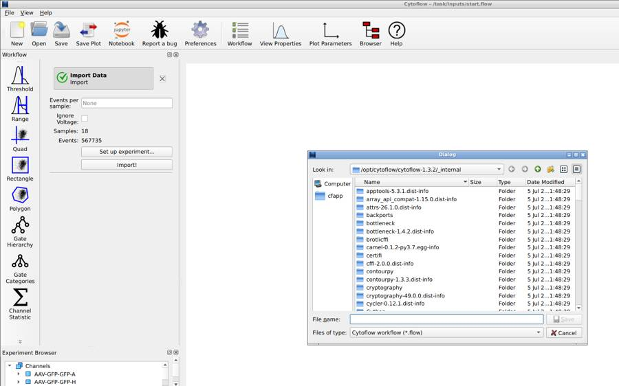
cu click 1038 744; cu paste "/task/outputs/workflow.flow"; sleep 0.5; cu key Return; sleep 3; cu screenshot /tmp/screen.png; ls -la /task/outputs
{
"file_path": "/tmp/screen.png"
}/tmp/screen.png total 20 drwxrwsrwx 2 agent task 4096 Nov 10 19:14 . drwxr-xr-x 4 root root 4096 Nov 5 22:08 .. -rw-rw-r-- 1 cfapp task 10086 Nov 10 19:14 workflow.flow

cd /task/outputs; grep -n -v "tube\|conditions:\|well:\|sample:\|cell_line:\|file:" workflow.flow | head -150
1:- !workflow-item;5 2: channels: 3: - AAV-GFP-GFP-A 4: - AAV-GFP-GFP-H 5: - AAV-GFP-GFP-W 6: - FSC-A 7: - FSC-H 8: - FSC-W 9: - LiveDead-Zombie NIR-A 10: - LiveDead-Zombie NIR-H 11: - LiveDead-Zombie NIR-W 12: - SSC-A 13: - SSC-H 14: - SSC-W 15: - Time 18: data: 19: - E1 20: - E3 21: - WT 22: dtype: object 23: index: !pandas-index;1 24: dtype: int64 25: name: null 26: values: 27: - 1 28: - 2 29: - 0 31: data: 32: - E1 caspase only (1:100) 33: - E1 no stain 34: - E1 zombie only 35: - E1-1 caspase @ 1:100 36: - E1-2 caspase @1:50 37: - E1-3 caspase @ 1:50 38: - E3 caspase only (1:100) 39: - E3 no stain 40: - E3 zombie only 41: - E3-1 @ 1:100 42: - E3-2 caspase @ 1:50 43: - E3-3 caspase @ 1:50 44: - WT caspase only (1:100) 45: - WT no stain 46: - WT zombie only 47: - WT-1 caspase @ 1:100 48: - WT-2 caspase @ 1:50 49: - WT-3 caspase @ 1:50 50: dtype: object 51: index: !pandas-index;1 52: dtype: int64 53: name: null 54: values: 55: - 7 56: - 6 57: - 8 58: - 9 59: - 10 60: - 11 61: - 13 62: - 12 63: - 14 64: - 15 65: - 16 66: - 17 67: - 1 68: - 0 69: - 2 70: - 3 71: - 4 72: - 5 74: data: 75: - A1 76: - A10 77: - A11 78: - A12 79: - A2 80: - A3 81: - A4 82: - A5 83: - A6 84: - A7 85: - A8 86: - A9 87: - B1 88: - B2 89: - B3 90: - B4 91: - B5 92: - B6 93: dtype: object 94: index: !pandas-index;1 95: dtype: int64 96: name: null 97: values: 98: - 0 99: - 9 100: - 10 101: - 11 102: - 1 103: - 2 104: - 3 105: - 4 106: - 5 107: - 6 108: - 7 109: - 8 110: - 12 111: - 13 112: - 14 113: - 15 114: - 16 115: - 17 116: current_view: null 117: metadata: 118: AAV-GFP-GFP-A: 119: fcs_name: AAV-GFP-GFP-A 120: range: 1048576.0 121: type: channel 122: voltage: '250' 123: AAV-GFP-GFP-H: 124: fcs_name: AAV-GFP-GFP-H 125: range: 1048576.0 126: type: channel 127: voltage: '250' 128: AAV-GFP-GFP-W: 129: fcs_name: AAV-GFP-GFP-W 130: range: 1024.0 131: type: channel 132: voltage: '250' 133: FSC-A: 134: fcs_name: FSC-A 135: range: 1048576.0 136: type: channel 137: voltage: '20' 138: FSC-H: 139: fcs_name: FSC-H 140: range: 1048576.0 141: type: channel 142: voltage: '20' 143: FSC-W: 144: fcs_name: FSC-W 145: range: 1024.0 146: type: channel 147: voltage: '20' 148: LiveDead-Zombie NIR-A: 149: fcs_name: LiveDead-Zombie NIR-A 150: range: 1048576.0 151: type: channel 152: voltage: '350' 153: LiveDead-Zombie NIR-H: 154: fcs_name: LiveDead-Zombie NIR-H
cu click 652 75; sleep 2; cu screenshot /tmp/screen.png
{
"file_path": "/tmp/screen.png"
}/tmp/screen.png

cu click 62 29; sleep 1; cu screenshot /tmp/screen.png
{
"file_path": "/tmp/screen.png"
}/tmp/screen.png
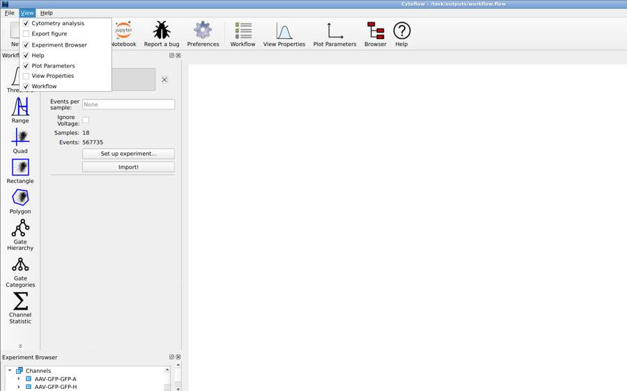
cu click 120 175; sleep 2; cu screenshot /tmp/screen.png
{
"file_path": "/tmp/screen.png"
}/tmp/screen.png

cu click 700 9 double; sleep 2; cu screenshot /tmp/screen.png; which xdotool wmctrl xwininfo 2>&1 | head
{
"file_path": "/tmp/screen.png"
}/tmp/screen.png /usr/bin/xdotool /usr/bin/xwininfo
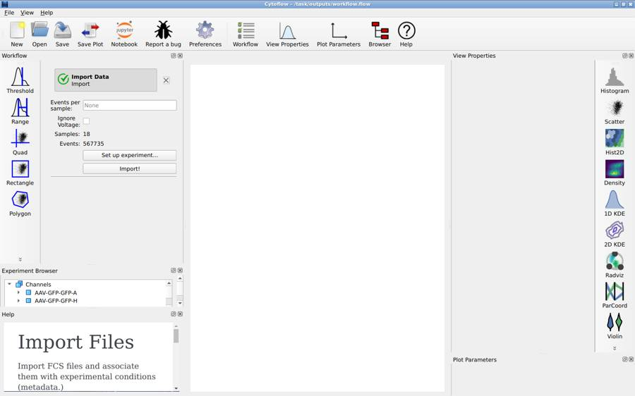
cu click 408 713; sleep 1; cu click 408 614; sleep 1; cu click 1393 180; sleep 3; cu screenshot /tmp/screen.png
{
"file_path": "/tmp/screen.png"
}/tmp/screen.png
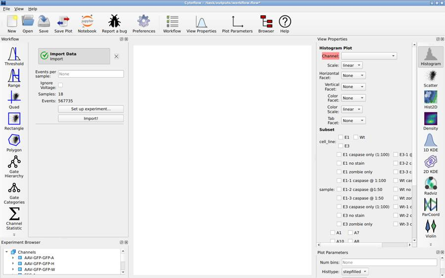
cu click 1393 390; sleep 2; cu screenshot /tmp/screen.png
{
"file_path": "/tmp/screen.png"
}/tmp/screen.png
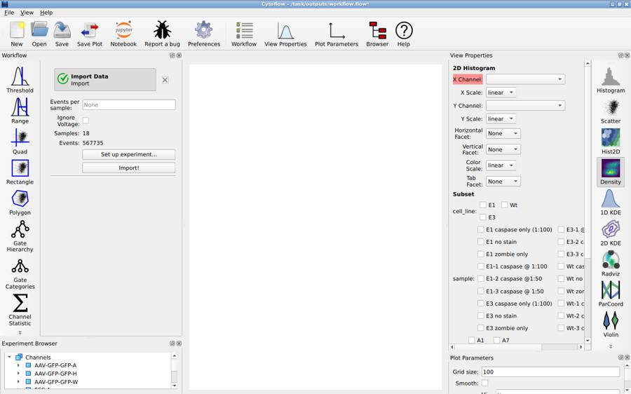
cu click 1198 181; sleep 1; cu screenshot /tmp/screen.png
{
"file_path": "/tmp/screen.png"
}/tmp/screen.png
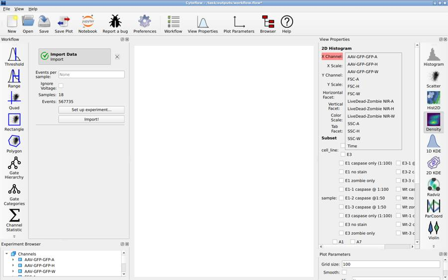
cu click 1135 254; sleep 1; cu click 1198 241; sleep 1; cu screenshot /tmp/screen.png
{
"file_path": "/tmp/screen.png"
}/tmp/screen.png
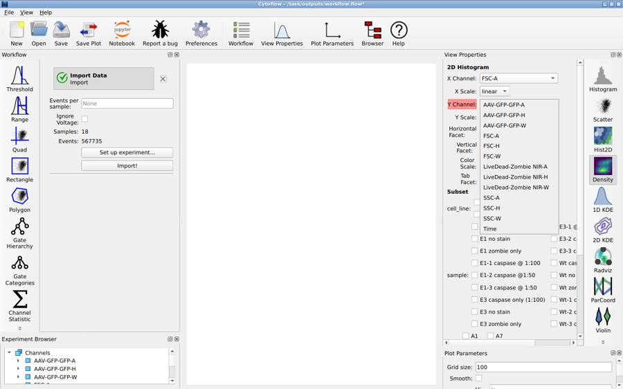
cu click 1135 457; sleep 6; cu screenshot /tmp/screen.png
{
"file_path": "/tmp/screen.png"
}/tmp/screen.png
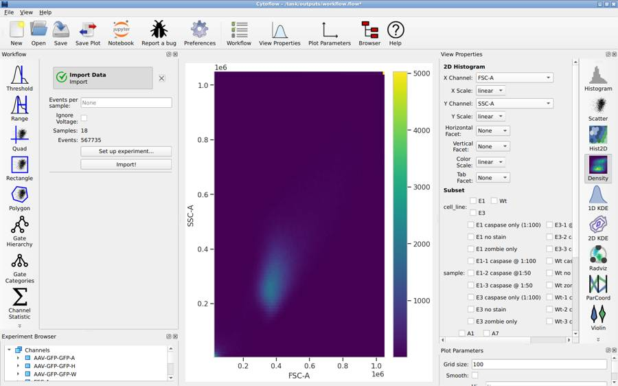
cu click 1142 378; sleep 1; cu screenshot /tmp/screen.png
{
"file_path": "/tmp/screen.png"
}/tmp/screen.png
cu click 1127 403; sleep 5; cu screenshot /tmp/screen.png
{
"file_path": "/tmp/screen.png"
}/tmp/screen.png
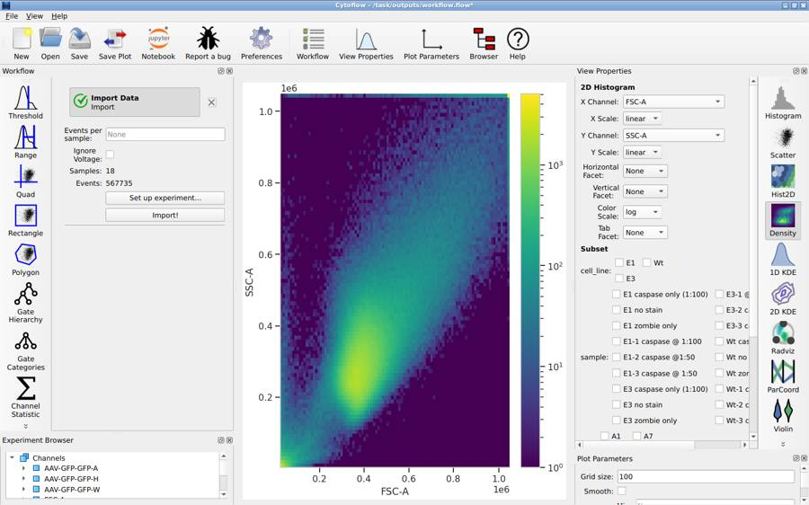
cu click 45 460; sleep 2; cu screenshot /tmp/screen.png
{
"file_path": "/tmp/screen.png"
}/tmp/screen.png
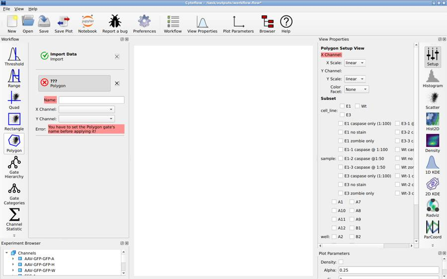
cu click 294 322; cu type "cells"; cu key Tab; sleep 1; cu click 279 352; sleep 1; cu screenshot /tmp/screen.png
{
"file_path": "/tmp/screen.png"
}/tmp/screen.png
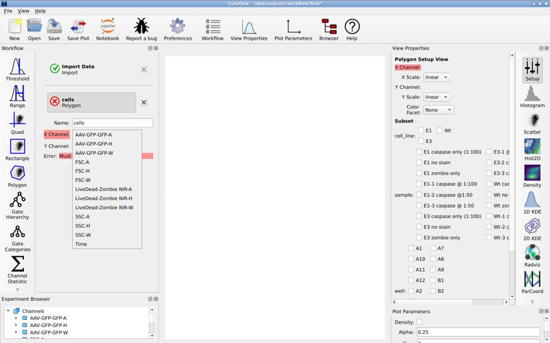
cu click 215 425; sleep 1; cu click 279 383; sleep 1; cu screenshot /tmp/screen.png
{
"file_path": "/tmp/screen.png"
}/tmp/screen.png
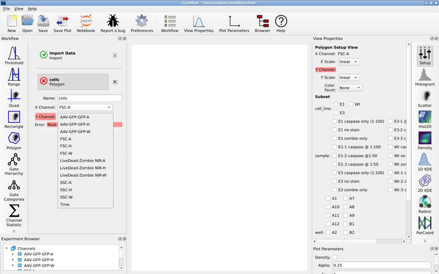
cu click 215 599; sleep 8; cu screenshot /tmp/screen.png
{
"file_path": "/tmp/screen.png"
}/tmp/screen.png
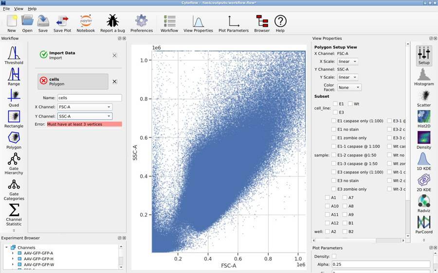
cu click 1098 845; sleep 10; cu screenshot /tmp/screen.png
{
"file_path": "/tmp/screen.png"
}/tmp/screen.png
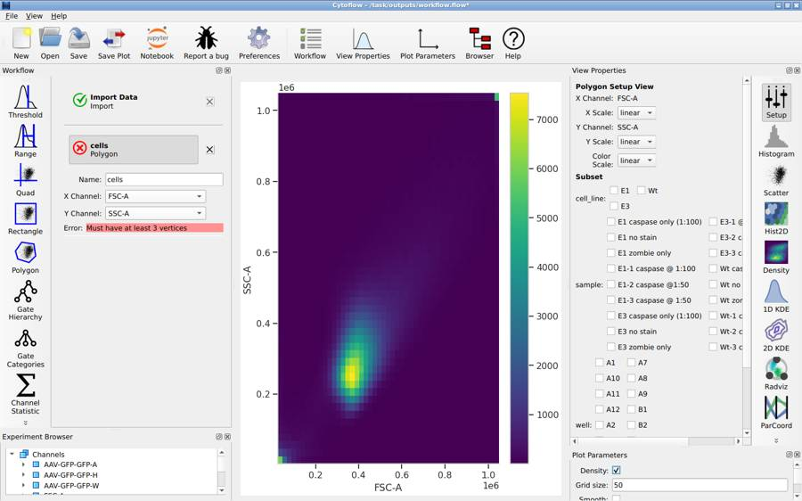
cu click 1142 288; sleep 1; cu click 1127 313; sleep 10; cu screenshot /tmp/screen.png
{
"file_path": "/tmp/screen.png"
}/tmp/screen.png
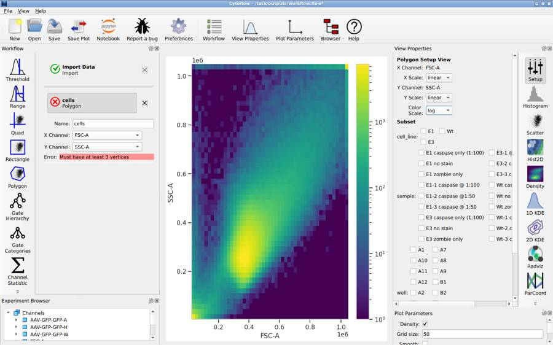
for p in "549 810" "549 644" "601 422" "708 218" "876 218" "876 517" "728 740"; do cu click $p; sleep 0.7; done; cu click 649 810 double; sleep 10; cu screenshot /tmp/screen.png
{
"file_path": "/tmp/screen.png"
}/tmp/screen.png
cu click 549 810; sleep 8; cu screenshot /tmp/screen.png
{
"file_path": "/tmp/screen.png"
}/tmp/screen.png
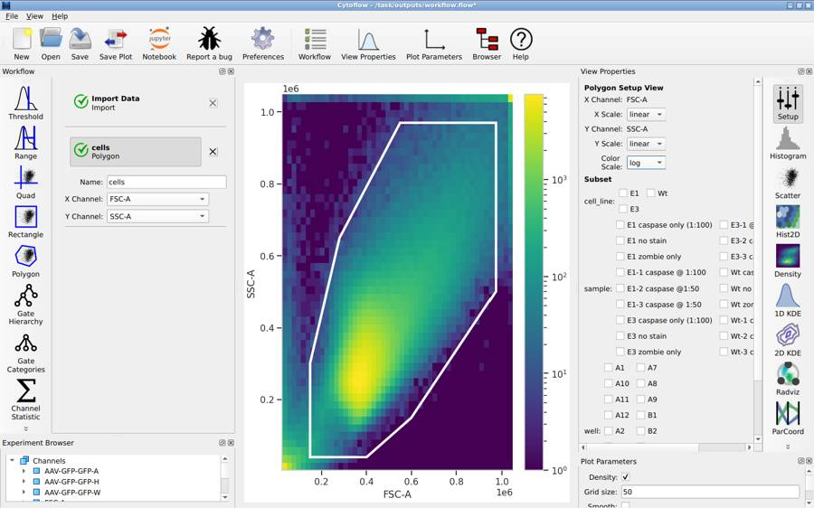
cu key ctrl+s; sleep 2; grep -n -A30 "polygon" /task/outputs/workflow.flow | head -60
779: current_view: &id005 !polygon-view;3 780- current_plot: null 781- huefacet: '' 782- huescale: log 783: op: &id004 !polygon;1 784- name: cells 785- vertices: 786- - !!python/tuple 787- - 149493.24404528458 788- - 40564.55912778409 789- - !!python/tuple 790- - 149493.24404528458 791- - 301902.39281663264 792- - !!python/tuple 793- - 280347.8734432888 794- - 649808.3839149122 795- - !!python/tuple 796- - 549908.4100031775 797- - 969947.2301837517 798- - !!python/tuple 799- - 973877.4092527112 800- - 969947.2301837517 801- - !!python/tuple 802- - 973877.4092527112 803- - 501172.4910043797 804- - !!python/tuple 805- - 599633.1691744191 806- - 149999.7769849894 807- - !!python/tuple 808- - 400734.1324894527 809- - 40564.55912778409 810- - !!python/tuple 811- - 400734.1324894527 812- - 40564.55912778409 813- xchannel: FSC-A -- 817: plot_params: !polygon-params;1 818- alpha: 0.25 819- col_wrap: null 820- density: true 821- despine: true 822- gridsize: 50 823- huelabel: '' 824- legend: true 825- marker: o 826- max_quantile: 1.0 827- min_quantile: 0.001 828- s: 2 829- sharex: true 830- sharey: true 831- smoothed: false 832- smoothed_sigma: 1.0 833- sns_context: notebook 834- sns_style: whitegrid 835- title: '' 836- xlabel: '' 837- xlim: *id002 838- ylabel: '' 839- ylim: *id003 840- subset_list:
cu click 45 460; sleep 2; cu screenshot /tmp/screen.png
{
"file_path": "/tmp/screen.png"
}/tmp/screen.png
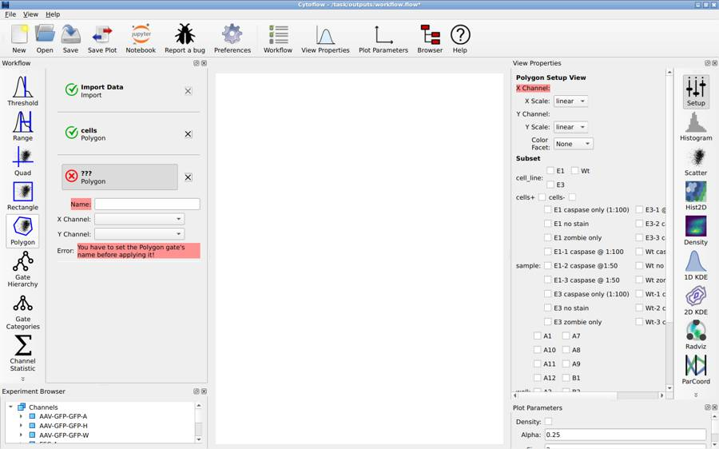
cu click 294 409; cu type "singlets"; cu key Tab; sleep 1; cu click 279 439; sleep 1; cu click 215 512; sleep 1; cu click 279 469; sleep 1; cu screenshot /tmp/screen.png
{
"file_path": "/tmp/screen.png"
}/tmp/screen.png
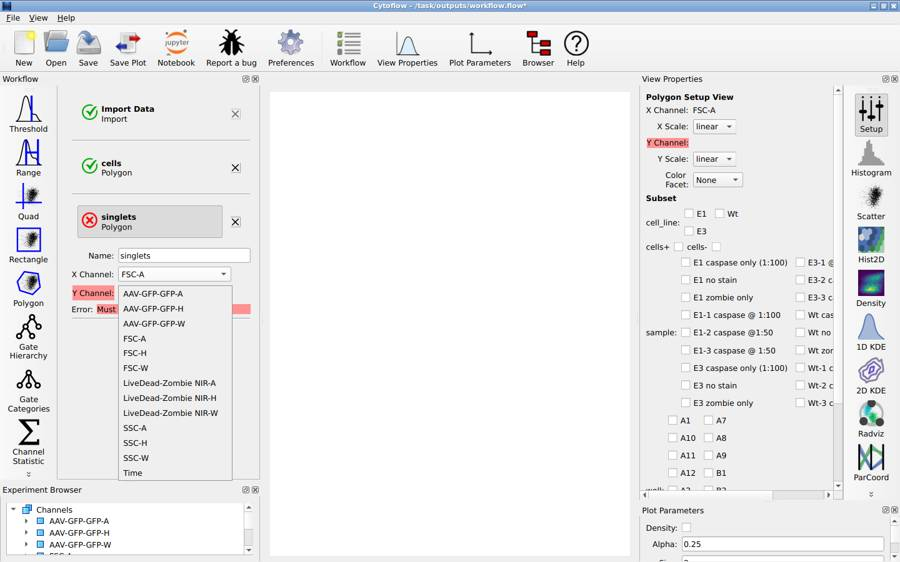
cu click 215 566; sleep 3; cu click 1086 395; sleep 3; cu click 1098 845; sleep 8; cu click 1142 288; sleep 1; cu click 1127 313; sleep 10; cu screenshot /tmp/screen.png
{
"file_path": "/tmp/screen.png"
}/tmp/screen.png
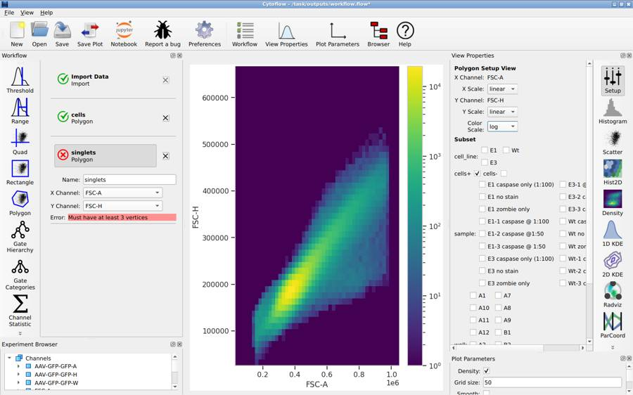
for p in "576 807" "576 738" "884 158" "884 440" "576 807"; do cu click $p; sleep 0.8; done; sleep 10; cu screenshot /tmp/screen.png
{
"file_path": "/tmp/screen.png"
}/tmp/screen.png
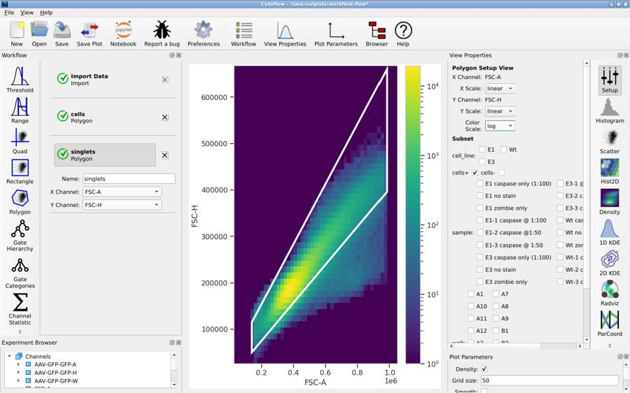
cu key ctrl+s; sleep 1; cu click 45 250; sleep 2; cu screenshot /tmp/screen.png
{
"file_path": "/tmp/screen.png"
}/tmp/screen.png
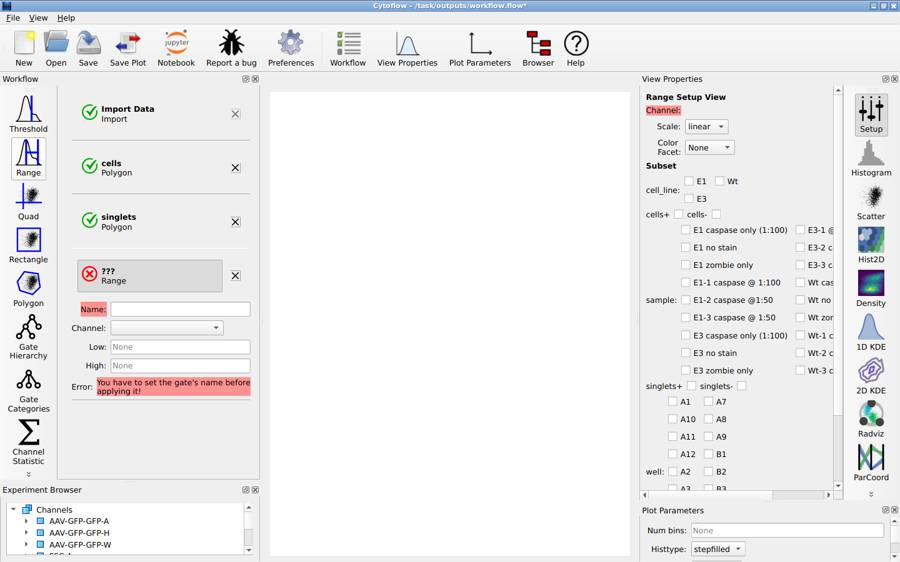
cu click 288 495; cu type "live"; cu key Tab; sleep 1; cu click 267 525; sleep 1; cu screenshot /tmp/screen.png
{
"file_path": "/tmp/screen.png"
}/tmp/screen.png
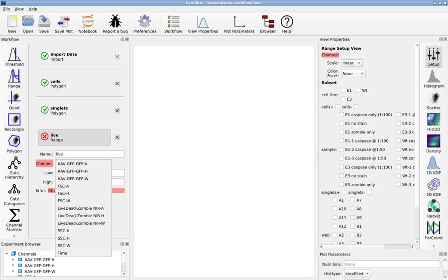
cu click 258 670; sleep 4; cu click 1130 203; sleep 1; cu screenshot /tmp/screen.png
{
"file_path": "/tmp/screen.png"
}/tmp/screen.png
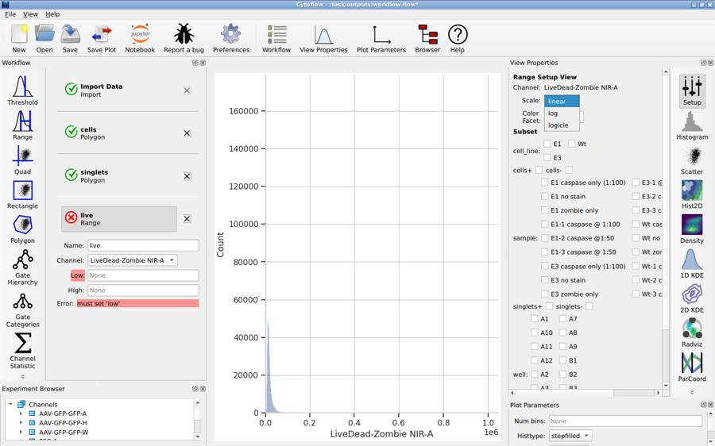
cu click 1124 253; sleep 4; cu click 1086 343; sleep 4; cu click 1106 618; sleep 6; cu screenshot /tmp/screen.png
{
"file_path": "/tmp/screen.png"
}/tmp/screen.png
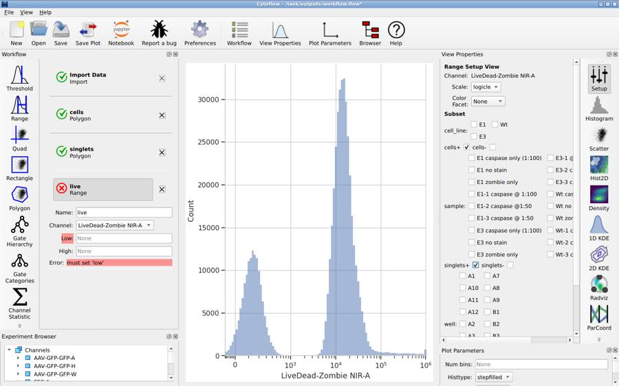
cu click 1097 424; sleep 3; cu click 1097 593; sleep 6; cu screenshot /tmp/screen.png
{
"file_path": "/tmp/screen.png"
}/tmp/screen.png
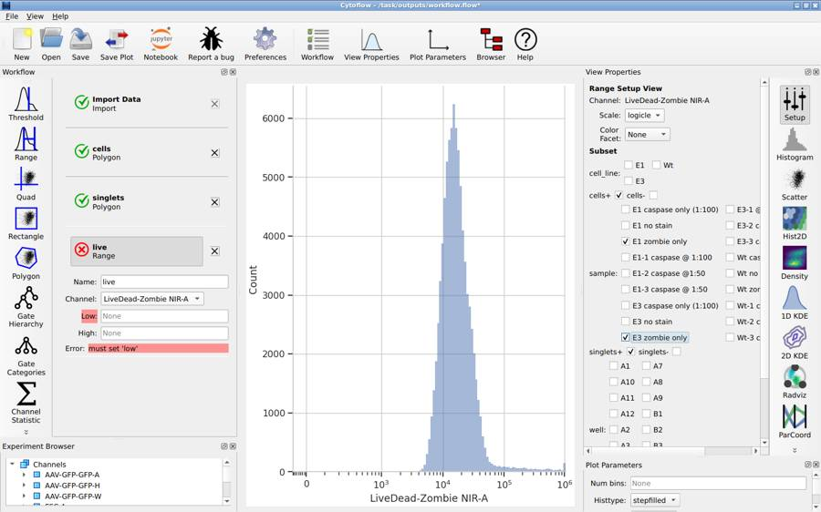
cu click 288 555; cu type "-100000"; cu key Tab; sleep 1; cu click 288 585; cu type "80000"; cu key Tab; sleep 8; cu screenshot /tmp/screen.png
{
"file_path": "/tmp/screen.png"
}/tmp/screen.png
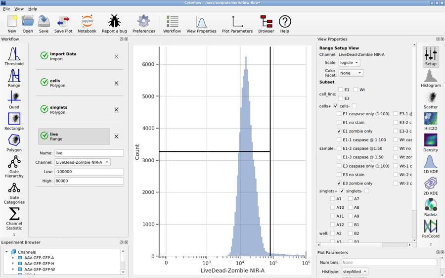
cu key ctrl+s; sleep 1; cu click 45 180; sleep 2; cu screenshot /tmp/screen.png
{
"file_path": "/tmp/screen.png"
}/tmp/screen.png

cu click 293 581; cu type "casp3_pos"; cu key Tab; sleep 1; cu click 277 612; sleep 1; cu click 240 613; sleep 4; cu click 1140 225; sleep 1; cu click 1136 275; sleep 4; cu click 1086 365; sleep 3; cu click 1080 387; sleep 3; cu click 1106 661; sleep 6; cu screenshot /tmp/screen.png
{
"file_path": "/tmp/screen.png"
}/tmp/screen.png
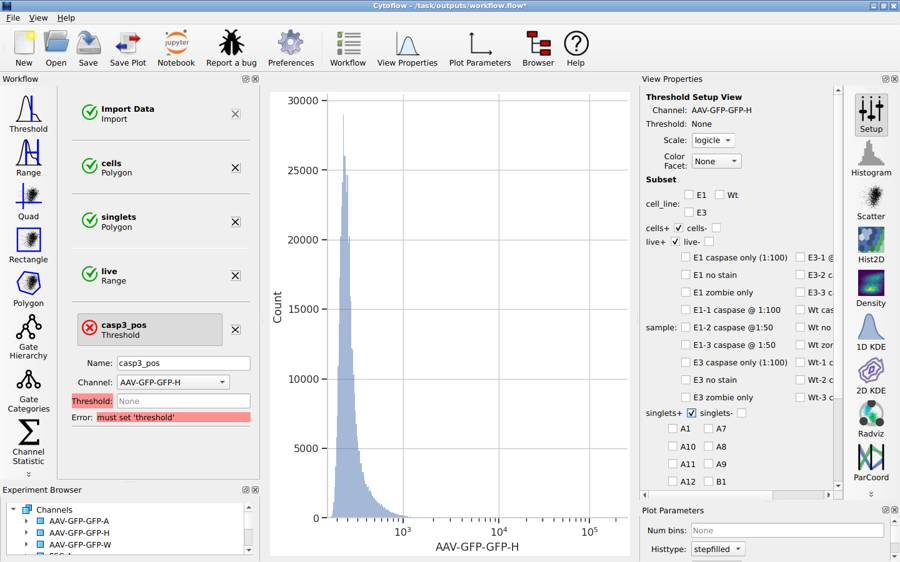
cu click 277 612; sleep 1; cu screenshot /tmp/screen.png
{
"file_path": "/tmp/screen.png"
}/tmp/screen.png
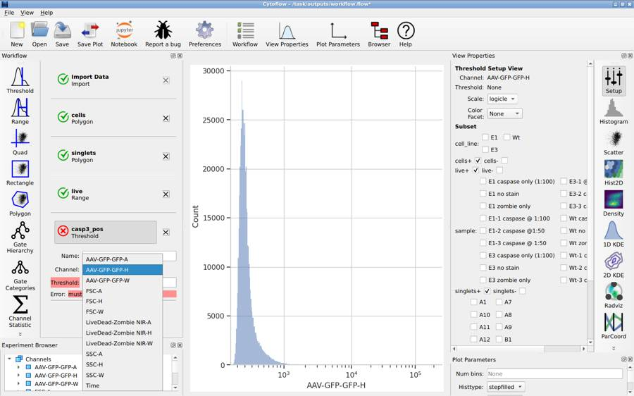
cu click 243 589; sleep 8; cu screenshot /tmp/screen.png
{
"file_path": "/tmp/screen.png"
}/tmp/screen.png
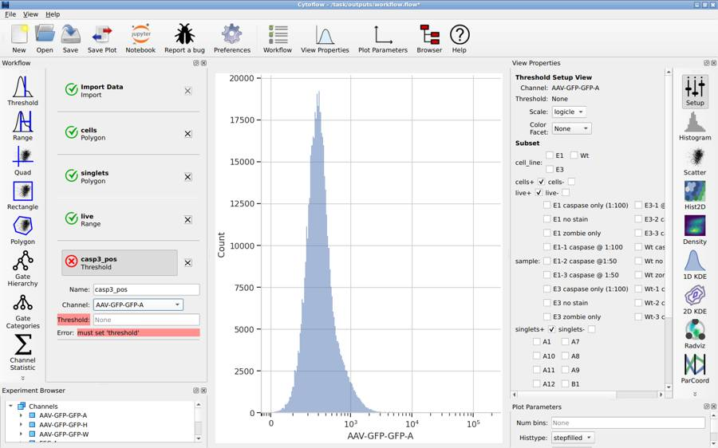
cu click 1097 468; sleep 2; cu click 1097 636; sleep 2; cu click 1280 552; sleep 2; cu click 1147 258; sleep 1; cu screenshot /tmp/screen.png
{
"file_path": "/tmp/screen.png"
}/tmp/screen.png
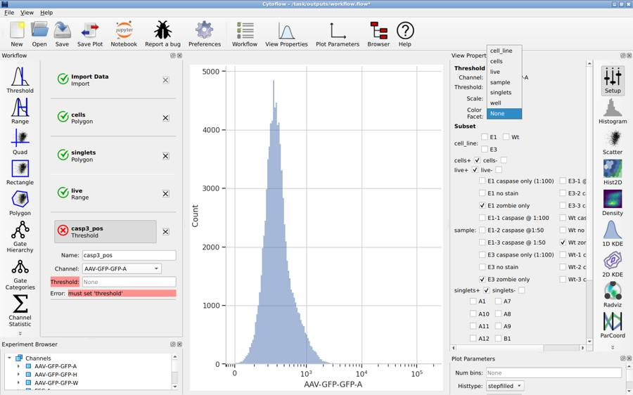
cu click 1137 187; sleep 8; cu screenshot /tmp/screen.png
{
"file_path": "/tmp/screen.png"
}/tmp/screen.png
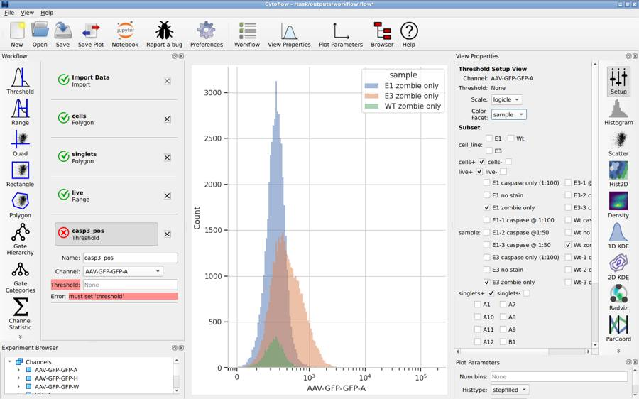
cu click 293 642; cu type "2000"; cu key Tab; sleep 6; cu key ctrl+s; sleep 1; cu scroll 45 600 down 5; sleep 1; cu screenshot /tmp/screen.png
{
"file_path": "/tmp/screen.png"
}/tmp/screen.png
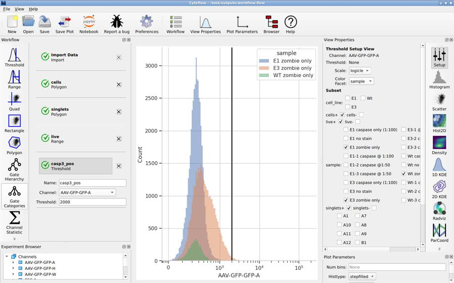
cu click 1097 468; sleep 2; cu click 1280 552; sleep 2; for p in "1097 580" "1097 608" "1280 412" "1280 440" "1280 468"; do cu click $p; sleep 2; done; sleep 6; cu screenshot /tmp/screen.png
{
"file_path": "/tmp/screen.png"
}/tmp/screen.png
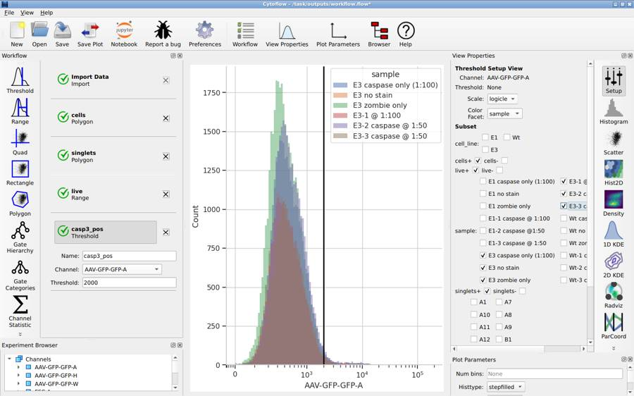
cu click 45 705; sleep 2; cu screenshot /tmp/screen.png
{
"file_path": "/tmp/screen.png"
}/tmp/screen.png
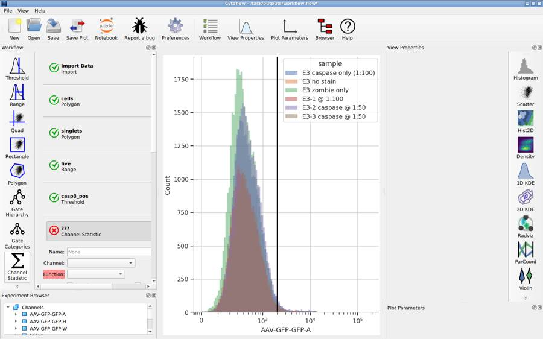
cu click 408 784; sleep 1; cu scroll 260 500 down 10; sleep 1; cu screenshot /tmp/screen.png
{
"file_path": "/tmp/screen.png"
}/tmp/screen.png
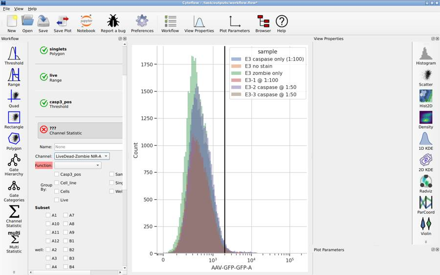
cu drag 420 510 660 510; sleep 3; cu screenshot /tmp/screen.png
{
"file_path": "/tmp/screen.png"
}/tmp/screen.png
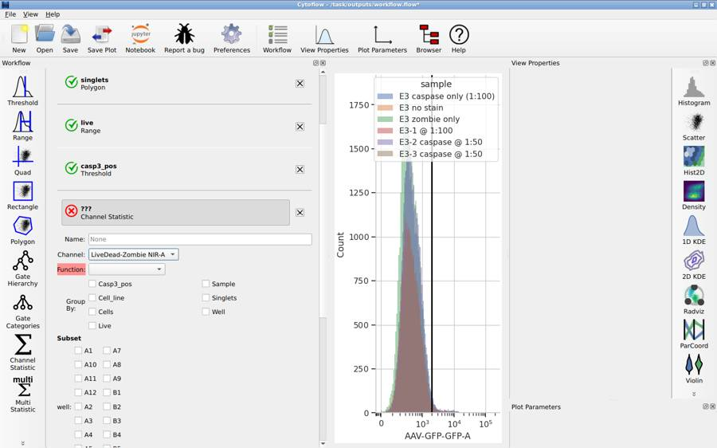
cu click 400 480; cu type "n_scatter"; cu key Tab; sleep 1; cu click 254 541; sleep 1; cu screenshot /tmp/screen.png
{
"file_path": "/tmp/screen.png"
}/tmp/screen.png
cu click 205 542; sleep 2; cu click 186 626; sleep 2; cu click 413 598; sleep 2; cu click 413 626; sleep 6; cu screenshot /tmp/screen.png
{
"file_path": "/tmp/screen.png"
}/tmp/screen.png
cu click 45 705; sleep 2; cu scroll 635 600 down 15; sleep 1; cu screenshot /tmp/screen.png
{
"file_path": "/tmp/screen.png"
}/tmp/screen.png
cu click 166 475; sleep 1; cu click 187 850; sleep 1; cu scroll 635 400 up 4; sleep 1; cu screenshot /tmp/screen.png
{
"file_path": "/tmp/screen.png"
}/tmp/screen.png
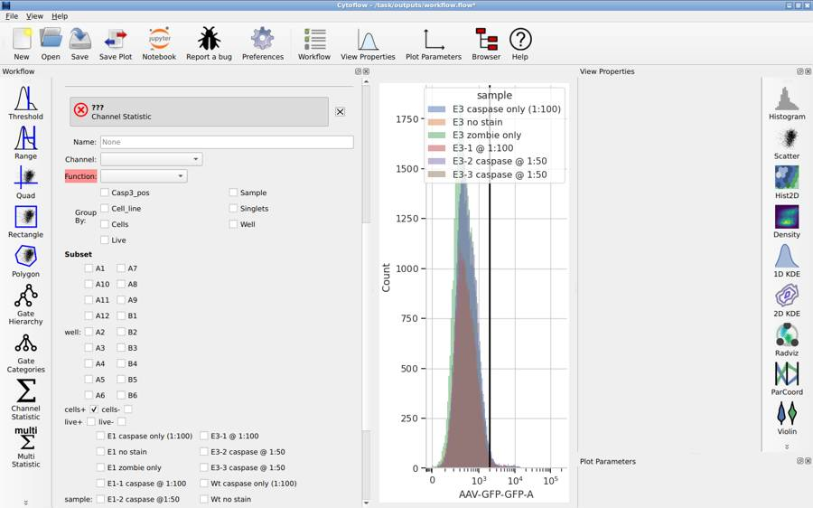
cu click 400 251; cu type "n_fluor"; cu key Tab; sleep 1; cu click 267 282; sleep 1; cu click 240 284; sleep 2; cu click 254 312; sleep 1; cu click 205 313; sleep 2; cu click 186 341; sleep 2; cu click 186 425; sleep 2; cu click 413 397; sleep 6; cu screenshot /tmp/screen.png
{
"file_path": "/tmp/screen.png"
}/tmp/screen.png
cu key ctrl+s; sleep 1; cu click 45 705; sleep 2; cu scroll 635 600 down 15; sleep 1; cu screenshot /tmp/screen.png
{
"file_path": "/tmp/screen.png"
}/tmp/screen.png
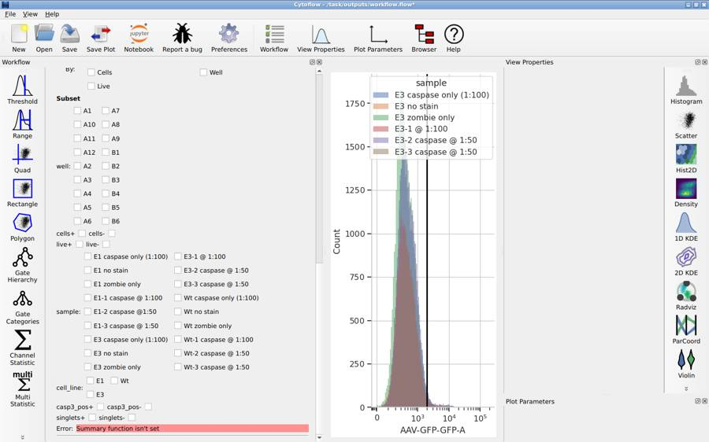
cu click 166 475; sleep 1; cu click 162 497; sleep 1; cu click 187 850; sleep 1; cu scroll 635 400 up 4; sleep 1; cu click 400 251; cu type "med_casp"; cu key Tab; sleep 1; cu click 267 282; sleep 1; cu click 240 284; sleep 2; cu click 254 312; sleep 1; cu screenshot /tmp/screen.png
{
"file_path": "/tmp/screen.png"
}/tmp/screen.png
cu click 208 577; sleep 2; cu click 413 397; sleep 5; cu key ctrl+s; sleep 1; cu click 45 705; sleep 2; cu scroll 635 600 down 15; sleep 1; cu click 166 475; sleep 1; cu click 187 850; sleep 1; cu scroll 635 400 up 4; sleep 1; cu click 400 251; cu type "med_zombie"; cu key Tab; sleep 1; cu click 267 282; sleep 1; cu screenshot /tmp/screen.png
{
"file_path": "/tmp/screen.png"
}/tmp/screen.png
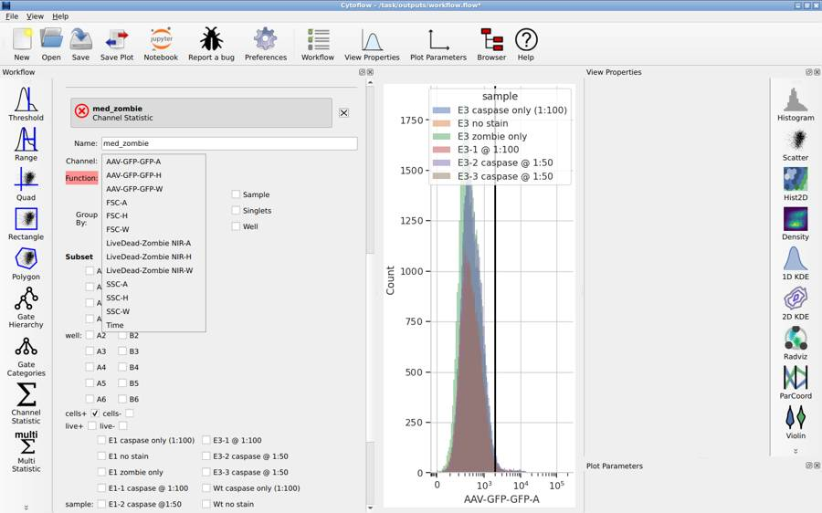
cu click 260 427; sleep 2; cu click 254 312; sleep 1; cu click 208 577; sleep 2; cu click 413 397; sleep 5; cu key ctrl+s; sleep 2; cu screenshot /tmp/screen.png; grep -n -B3 -A40 "channel-statistic\|!channelstat\|statistic" /task/outputs/workflow.flow | grep -v "^--$" | grep -n "name:\|channel:\|function\|by:\|subset\|- \|operation" | head -80
{
"file_path": "/tmp/screen.png"
}/tmp/screen.png
1:444- sample: E3-3 caspase @ 1:50
2:445- well: B6
3:446- file: /task/inputs/raw/Caspase_h4_mlk(4)_caspase_Group_B6_E3-3-1-50.fcs
5:448- Conditions: !pandas-dataframe;1
6:449- columns: []
7:450- data: {}
8:451- index: !pandas-multiindex;2
9:452- codes:
10:453- - - 2
11:454- - 2
12:455- - 2
13:456- - 2
14:457- - 2
15:458- - 2
16:459- - 0
17:460- - 0
18:461- - 0
19:462- - 0
20:463- - 0
21:464- - 0
22:465- - 1
23:466- - 1
24:467- - 1
25:468- - 1
26:469- - 1
27:470- - 1
28:471- - - 13
29:472- - 12
30:473- - 14
31:474- - 15
32:475- - 16
33:476- - 17
34:477- - 1
35:478- - 0
36:479- - 2
37:480- - 3
38:481- - 4
39:482- - 5
40:483- - 7
41:484- - 6
42:485- - 8
43:486- - 9
44:487- - 10
45:1022- - B6
46:1023- values_type: categorical
47:1024- operation: *id004
49:1026- Conditions: !pandas-dataframe;1
50:1027- columns: []
51:1028- data: {}
52:1029- index: !pandas-multiindex;2
53:1030- codes:
54:1031- - - 2
55:1032- - 2
56:1033- - 2
57:1034- - 2
58:1035- - 2
59:1036- - 2
60:1037- - 0
61:1038- - 0
62:1039- - 0
63:1040- - 0
64:1041- - 0
65:1042- - 0
66:1043- - 1
67:1044- - 1
68:1045- - 1
69:1046- - 1
70:1047- - 1
71:1048- - 1
72:1049- - - 13
73:1050- - 12
74:1051- - 14
75:1052- - 15
76:1053- - 16
77:1054- - 17
78:1055- - 1
79:1056- - 0
80:1057- - 2
81:1058- - 3
82:1059- - 4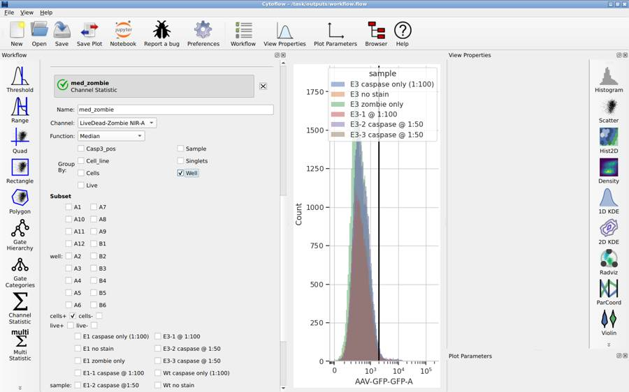
mkdir -p /tmp/scripts && cat > /tmp/scripts/readflow.py <<'EOF'
import yaml, sys
class L(yaml.SafeLoader): pass
def multi(loader, suffix, node):
if isinstance(node, yaml.MappingNode):
d = loader.construct_mapping(node, deep=True); d['__tag__']=suffix; return d
if isinstance(node, yaml.SequenceNode):
return loader.construct_sequence(node, deep=True)
return loader.construct_scalar(node)
L.add_multi_constructor('!', multi)
L.add_multi_constructor('tag:yaml.org,2002:python/', multi)
wf = yaml.load(open(sys.argv[1]), Loader=L)
for item in wf:
op = item['operation']
d = {k:v for k,v in op.items() if k not in ('tubes','conditions')}
print(d)
print(' subset_list:', [(s.get('name'), s.get('selected'), s.get('values'), s.get('high'), s.get('low')) for s in item.get('subset_list',[]) if isinstance(s,dict) and (s.get('selected') not in (None, [], False))] if 'subset_list' in item else None)
print(' item keys', [k for k in item.keys()])
EOF
python3 /tmp/scripts/readflow.py /task/outputs/workflow.flow 2>&1 | cut -c1-1500{'channels_list': [], 'events': None, 'ignore_v_bool': False, 'name_metadata': None, '__tag__': 'import;4'}
subset_list: None
item keys ['channels', 'conditions', 'current_view', 'metadata', 'operation', 'statistics', 'views', '__tag__']
{'name': 'cells', 'vertices': [[149493.24404528458, 40564.55912778409], [149493.24404528458, 301902.39281663264], [280347.8734432888, 649808.3839149122], [549908.4100031775, 969947.2301837517], [973877.4092527112, 969947.2301837517], [973877.4092527112, 501172.4910043797], [599633.1691744191, 149999.7769849894], [400734.1324894527, 40564.55912778409], [400734.1324894527, 40564.55912778409]], 'xchannel': 'FSC-A', 'xscale': 'linear', 'ychannel': 'SSC-A', 'yscale': 'linear', '__tag__': 'polygon;1'}
subset_list: None
item keys ['channels', 'conditions', 'current_view', 'metadata', 'operation', 'statistics', 'views', '__tag__']
{'name': 'singlets', 'vertices': [[138133.65242922277, 50576.90224802468], [138133.65242922277, 115165.91941865621], [984344.8840171295, 660258.0794798951], [984344.8840171295, 396030.2819636751]], 'xchannel': 'FSC-A', 'xscale': 'linear', 'ychannel': 'FSC-H', 'yscale': 'linear', '__tag__': 'polygon;1'}
subset_list: None
item keys ['channels', 'conditions', 'current_view', 'metadata', 'operation', 'statistics', 'views', '__tag__']
{'channel': 'LiveDead-Zombie NIR-A', 'high': 80000.0, 'low': -100000.0, 'name': 'live', '__tag__': 'range;1'}
subset_list: None
item keys ['channels', 'conditions', 'current_view', 'metadata', 'operation', 'statistics', 'views', '__tag__']
{'channel': 'AAV-GFP-GFP-A', 'name': 'casp3_pos', 'threshold': 2000.0, '__tag__': 'threshold;1'}
subset_list: None
item keys ['channels', 'conditions', 'current_view', 'metadata', 'operation', 'statistics', 'views', '__tag__']
{'by': ['cells', 'singlets', 'well'], 'channel': 'LiveDead-Zombie NIR-A', 'function_name': 'Count', 'name': 'n_scatter', 'subset_list': [{'name': 'casp3_pos', 'selected_f': False, 'selected_t': False, 'values': [], '__tag__': 'bool-subset;1'}, {'name': 'cell_line', 'selected': [], 'values': ['E1', 'E3', 'WT'], '__tag__': 'category-subset;1'}, {'name': 'cells', 'selected_f': False, 'selected_t': False, 'values': [], '__tag__': 'bool-subset;1'}, {'name': 'live', 'selected_f': False, 'selected_t': False, 'values': [], '__tag__': 'bool-subset;1'}, {'name': 'sample', 'selected': [], 'values': ['E1 caspase only (1:100)', 'E1 no stain', 'E1 zombie only', 'E1-1 caspase @ 1:100', 'E1-2 caspase @1:50', 'E1-3 caspase @ 1:50', 'E3 caspase only (1:100)', 'E3 no stain', 'E3 zombie only', 'E3-1 @ 1:100', 'E3-2 caspase @ 1:50', 'E3-3 caspase @ 1:50', 'WT caspase only (1:100)', 'WT no stain', 'WT zombie only', 'WT-1 caspase @ 1:100', 'WT-2 caspase @ 1:50', 'WT-3 caspase @ 1:50'], '__tag__': 'category-subset;1'}, {'name': 'singlets', 'selected_f': False, 'selected_t': False, 'values': [], '__tag__': 'bool-subset;1'}, {'name': 'well', 'selected': [], 'values': ['A1', 'A10', 'A11', 'A12', 'A2', 'A3', 'A4', 'A5', 'A6', 'A7', 'A8', 'A9', 'B1', 'B2', 'B3', 'B4', 'B5', 'B6'], '__tag__': 'category-subset;1'}], '__tag__': 'channel-statistic;2'}
subset_list: None
item keys ['channels', 'conditions', 'current_view', 'metadata', 'operation', 'statistics', 'views', '__tag__']
{'by': ['casp3_pos', 'live', 'well'], 'channel': 'AAV-GFP-GFP-A', 'function_name': 'Count', 'name': 'n_fluor', 'subset_list': [{'name': 'casp3_pos', 'selected_f': False, 'selected_t': False, 'values': [], '__tag__': 'bool-subset;1'}, {'name': 'cell_line', 'selected': [], 'values': ['E1', 'E3', 'WT'], '__tag__': 'category-subset;1'}, {'name': 'cells', 'selected_f': False, 'selected_t': True, 'values': [], '__tag__': 'bool-subset;1'}, {'name': 'live', 'selected_f': False, 'selected_t': False, 'values': [], '__tag__': 'bool-subset;1'}, {'name': 'sample', 'selected': [], 'values': ['E1 caspase only (1:100)', 'E1 no stain', 'E1 zombie only', 'E1-1 caspase @ 1:100', 'E1-2 caspase @1:50', 'E1-3 caspase @ 1:50', 'E3 caspase only (1:100)', 'E3 no stain', 'E3 zombie only', 'E3-1 @ 1:100', 'E3-2 caspase @ 1:50', 'E3-3 caspase @ 1:50', 'WT caspase only (1:100)', 'WT no stain', 'WT zombie only', 'WT-1 caspase @ 1:100', 'WT-2 caspase @ 1:50', 'WT-3 caspase @ 1:50'], '__tag__': 'category-subset;1'}, {'name': 'singlets', 'selected_f': False, 'selected_t': True, 'values': [], '__tag__': 'bool-subset;1'}, {'name': 'well', 'selected': [], 'values': ['A1', 'A10', 'A11', 'A12', 'A2', 'A3', 'A4', 'A5', 'A6', 'A7', 'A8', 'A9', 'B1', 'B2', 'B3', 'B4', 'B5', 'B6'], '__tag__': 'category-subset;1'}], '__tag__': 'channel-statistic;2'}
subset_list: None
item keys ['channels', 'conditions', 'current_view', 'metadata', 'operation', 'statistics', 'views', '__tag__']
{'by': ['well'], 'channel': 'AAV-GFP-GFP-A', 'function_name': 'Median', 'name': 'med_casp', 'subset_list': [{'name': 'casp3_pos', 'selected_f': False, 'selected_t': False, 'values': [], '__tag__': 'bool-subset;1'}, {'name': 'cell_line', 'selected': [], 'values': ['E1', 'E3', 'WT'], '__tag__': 'category-subset;1'}, {'name': 'cells', 'selected_f': False, 'selected_t': True, 'values': [], '__tag__': 'bool-subset;1'}, {'name': 'live', 'selected_f': False, 'selected_t': True, 'values': [], '__tag__': 'bool-subset;1'}, {'name': 'sample', 'selected': [], 'values': ['E1 caspase only (1:100)', 'E1 no stain', 'E1 zombie only', 'E1-1 caspase @ 1:100', 'E1-2 caspase @1:50', 'E1-3 caspase @ 1:50', 'E3 caspase only (1:100)', 'E3 no stain', 'E3 zombie only', 'E3-1 @ 1:100', 'E3-2 caspase @ 1:50', 'E3-3 caspase @ 1:50', 'WT caspase only (1:100)', 'WT no stain', 'WT zombie only', 'WT-1 caspase @ 1:100', 'WT-2 caspase @ 1:50', 'WT-3 caspase @ 1:50'], '__tag__': 'category-subset;1'}, {'name': 'singlets', 'selected_f': False, 'selected_t': True, 'values': [], '__tag__': 'bool-subset;1'}, {'name': 'well', 'selected': [], 'values': ['A1', 'A10', 'A11', 'A12', 'A2', 'A3', 'A4', 'A5', 'A6', 'A7', 'A8', 'A9', 'B1', 'B2', 'B3', 'B4', 'B5', 'B6'], '__tag__': 'categ
… [1,642 more characters not shown]cu scroll 1393 600 down 10; sleep 1; cu screenshot /tmp/screen.png
{
"file_path": "/tmp/screen.png"
}/tmp/screen.png
cu click 1393 791; sleep 1; cu screenshot /tmp/screen.png
{
"file_path": "/tmp/screen.png"
}/tmp/screen.png
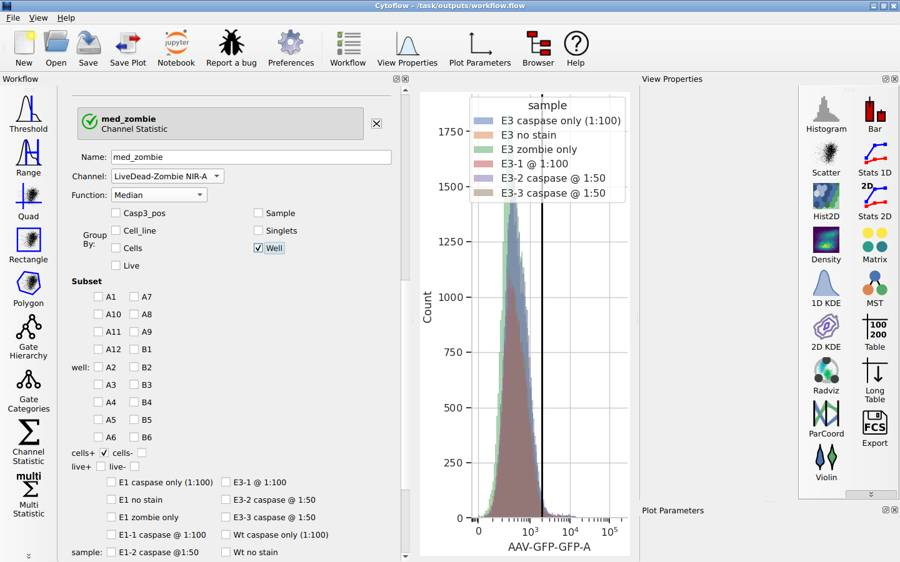
cu click 1399 610; sleep 3; cu screenshot /tmp/screen.png
{
"file_path": "/tmp/screen.png"
}/tmp/screen.png
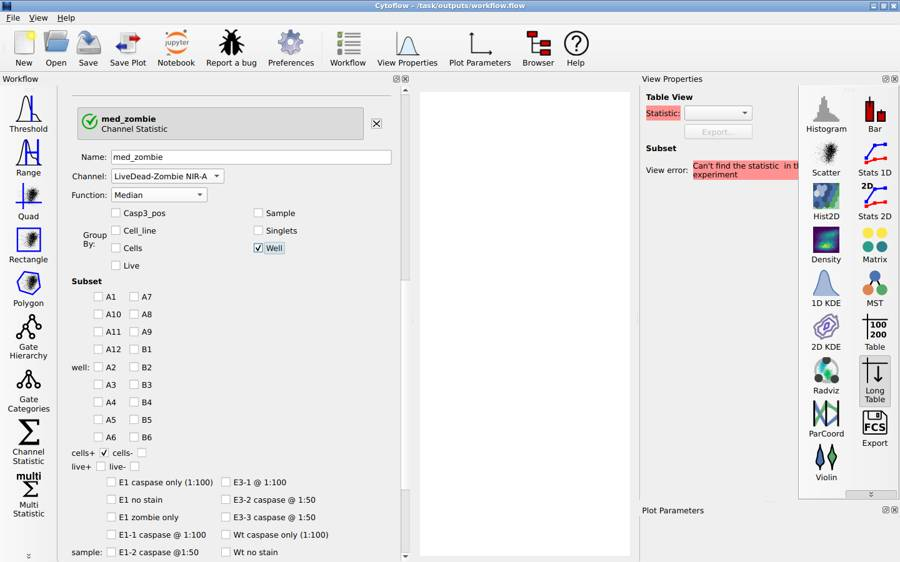
cu click 1148 181; sleep 1; cu screenshot /tmp/screen.png
{
"file_path": "/tmp/screen.png"
}/tmp/screen.png
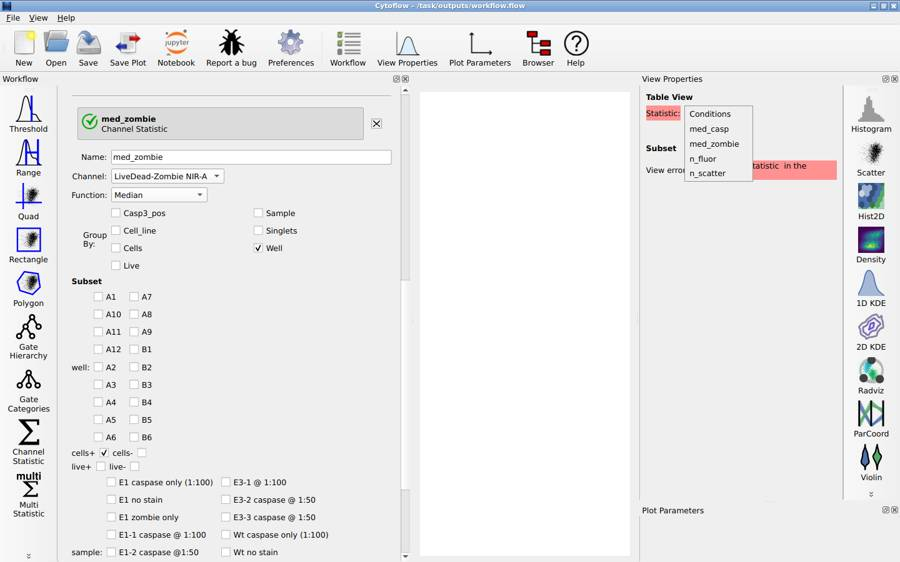
cu click 1131 278; sleep 4; cu screenshot /tmp/screen.png
{
"file_path": "/tmp/screen.png"
}/tmp/screen.png
mkdir -p /task/outputs/cytoflow_exports && chmod 777 /task/outputs/cytoflow_exports; cu click 1148 211; sleep 2; cu screenshot /tmp/screen.png
{
"file_path": "/tmp/screen.png"
}/tmp/screen.png
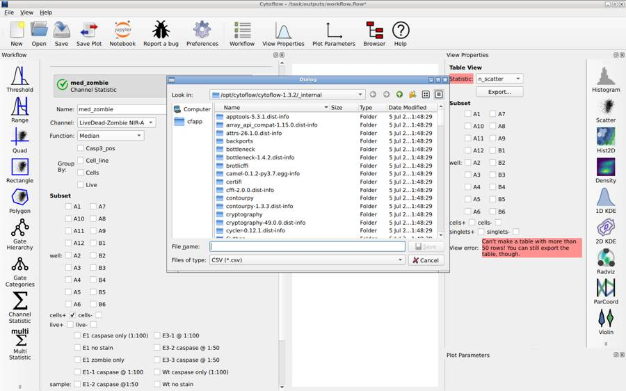
cu click 707 567; cu paste "/task/outputs/cytoflow_exports/n_scatter.csv"; sleep 0.5; cu key Return; sleep 3 for pair in "254 n_fluor" "206 med_casp" "230 med_zombie"; do set -- $pair; cu click 1148 181; sleep 1; cu click 1131 $1; sleep 4; cu click 1148 211; sleep 2; cu click 707 567; cu paste "/task/outputs/cytoflow_exports/$2.csv"; sleep 0.5; cu key Return; sleep 3; done; cu screenshot /tmp/screen.png; ls -la /task/outputs/cytoflow_exports; head -5 /task/outputs/cytoflow_exports/*.csv
/tmp/screen.png total 24 drwxrwsrwx 2 root task 4096 Nov 10 19:28 . drwxrwsrwx 3 agent task 4096 Nov 10 19:27 .. -rw-rw-r-- 1 cfapp task 1037 Nov 10 19:28 med_casp.csv -rw-rw-r-- 1 cfapp task 1037 Nov 10 19:28 med_zombie.csv -rw-rw-r-- 1 cfapp task 1037 Nov 10 19:28 n_fluor.csv -rw-rw-r-- 1 cfapp task 1037 Nov 10 19:28 n_scatter.csv ==> /task/outputs/cytoflow_exports/med_casp.csv <== cells,singlets,well,LiveDead-Zombie NIR-A 0,0,A1,567.0 0,0,A10,1695.0 0,0,A11,1781.0 0,0,A12,2097.0 ==> /task/outputs/cytoflow_exports/med_zombie.csv <== cells,singlets,well,LiveDead-Zombie NIR-A 0,0,A1,567.0 0,0,A10,1695.0 0,0,A11,1781.0 0,0,A12,2097.0 ==> /task/outputs/cytoflow_exports/n_fluor.csv <== cells,singlets,well,LiveDead-Zombie NIR-A 0,0,A1,567.0 0,0,A10,1695.0 0,0,A11,1781.0 0,0,A12,2097.0 ==> /task/outputs/cytoflow_exports/n_scatter.csv <== cells,singlets,well,LiveDead-Zombie NIR-A 0,0,A1,567.0 0,0,A10,1695.0 0,0,A11,1781.0 0,0,A12,2097.0
{
"file_path": "/tmp/screen.png"
}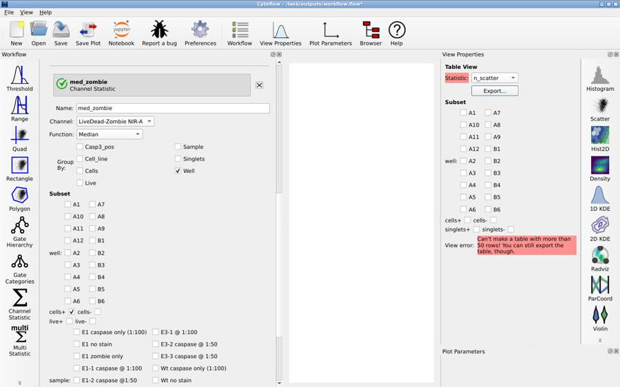
cu click 1148 181; sleep 1; cu screenshot /tmp/screen.png
{
"file_path": "/tmp/screen.png"
}/tmp/screen.png
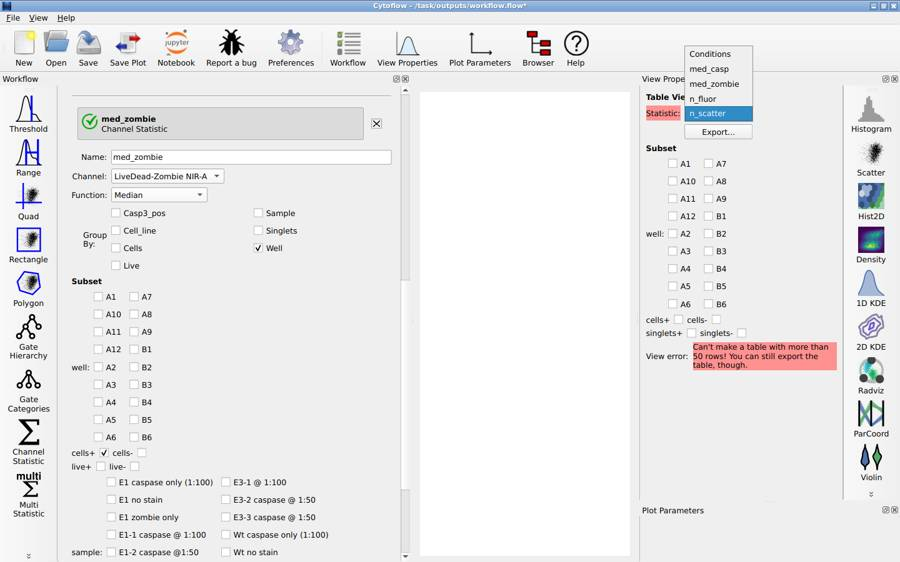
cu click 1124 158; sleep 4; cu screenshot /tmp/screen.png
{
"file_path": "/tmp/screen.png"
}/tmp/screen.png
exp() { cu click 1148 211; sleep 2; cu click 707 567; cu paste "/task/outputs/cytoflow_exports/$1.csv"; sleep 0.5; cu key Return; sleep 2; cu screenshot /tmp/s_$1.png; }
exp n_fluor; sleep 1
cu click 1148 181; sleep 1; cu click 1140 157; sleep 4; exp med_zombie
cu click 1148 181; sleep 1; cu click 1134 157; sleep 4; exp med_casp
head -4 /task/outputs/cytoflow_exports/*.csv; wc -l /task/outputs/cytoflow_exports/*.csv/tmp/s_n_fluor.png /tmp/s_med_zombie.png /tmp/s_med_casp.png ==> /task/outputs/cytoflow_exports/med_casp.csv <== cells,singlets,well,LiveDead-Zombie NIR-A 0,0,A1,567.0 0,0,A10,1695.0 0,0,A11,1781.0 ==> /task/outputs/cytoflow_exports/med_zombie.csv <== cells,singlets,well,LiveDead-Zombie NIR-A 0,0,A1,567.0 0,0,A10,1695.0 0,0,A11,1781.0 ==> /task/outputs/cytoflow_exports/n_fluor.csv <== cells,singlets,well,LiveDead-Zombie NIR-A 0,0,A1,567.0 0,0,A10,1695.0 0,0,A11,1781.0 ==> /task/outputs/cytoflow_exports/n_scatter.csv <== cells,singlets,well,LiveDead-Zombie NIR-A 0,0,A1,567.0 0,0,A10,1695.0 0,0,A11,1781.0 73 /task/outputs/cytoflow_exports/med_casp.csv 73 /task/outputs/cytoflow_exports/med_zombie.csv 73 /task/outputs/cytoflow_exports/n_fluor.csv 73 /task/outputs/cytoflow_exports/n_scatter.csv 292 total
{
"file_path": "/tmp/s_n_fluor.png"
}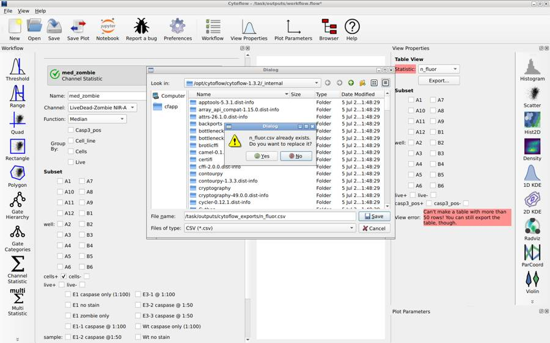
ls -la --time-style=full-iso /task/outputs/cytoflow_exports/; date; cu screenshot /tmp/screen.png
total 24 drwxrwsrwx 2 root task 4096 2026-11-10 19:28:45.208429489 +0000 . drwxrwsrwx 3 agent task 4096 2026-11-10 19:27:56.956429489 +0000 .. -rw-rw-r-- 1 cfapp task 1037 2026-11-10 19:28:32.944899984 +0000 med_casp.csv -rw-rw-r-- 1 cfapp task 1037 2026-11-10 19:28:45.212211679 +0000 med_zombie.csv -rw-rw-r-- 1 cfapp task 1037 2026-11-10 19:28:20.680171433 +0000 n_fluor.csv -rw-rw-r-- 1 cfapp task 1037 2026-11-10 19:28:08.411410527 +0000 n_scatter.csv Tue Nov 10 19:29:53 UTC 2026 /tmp/screen.png
{
"file_path": "/tmp/screen.png"
}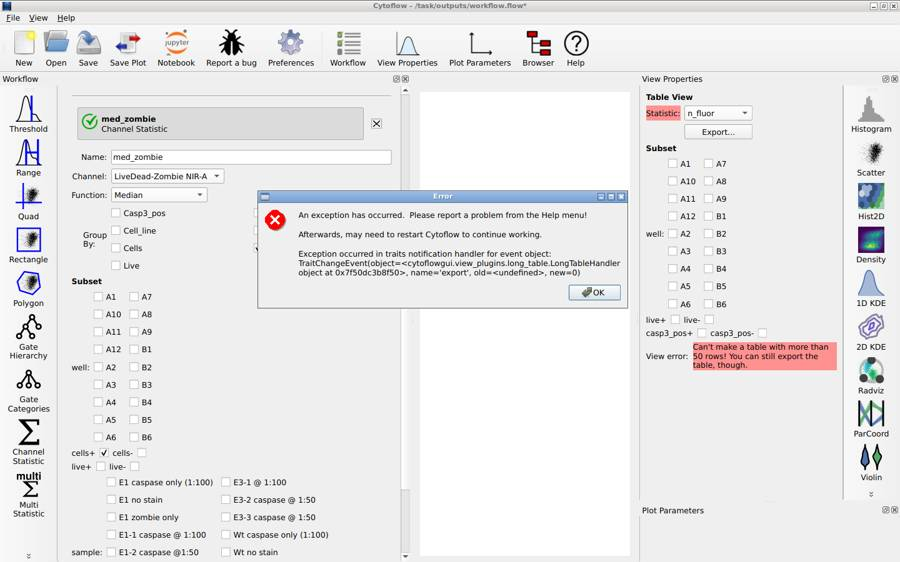
cd /task/outputs/cytoflow_exports && rm -f med_casp.csv med_zombie.csv n_fluor.csv; ls; cu click 950 468; sleep 2; cu screenshot /tmp/screen.png
{
"file_path": "/tmp/screen.png"
}n_scatter.csv /tmp/screen.png
cu click 1148 211; sleep 2; cu click 707 567; cu paste "/task/outputs/cytoflow_exports/n_fluor.csv"; sleep 0.5; cu key Return; sleep 3; cu screenshot /tmp/screen.png; ls -la /task/outputs/cytoflow_exports; head -6 /task/outputs/cytoflow_exports/n_fluor.csv
{
"file_path": "/tmp/screen.png"
}/tmp/screen.png total 16 drwxrwsrwx 2 root task 4096 Nov 10 19:30 . drwxrwsrwx 3 agent task 4096 Nov 10 19:27 .. -rw-rw-r-- 1 cfapp task 782 Nov 10 19:30 n_fluor.csv -rw-rw-r-- 1 cfapp task 1037 Nov 10 19:28 n_scatter.csv casp3_pos,live,well,AAV-GFP-GFP-A 0,0,A10,1225.0 0,0,A11,1045.0 0,0,A12,1368.0 0,0,A3,68.0 0,0,A4,243.0

cu click 1148 181; sleep 1; cu click 1140 157; sleep 4; cu screenshot /tmp/screen.png
{
"file_path": "/tmp/screen.png"
}/tmp/screen.png
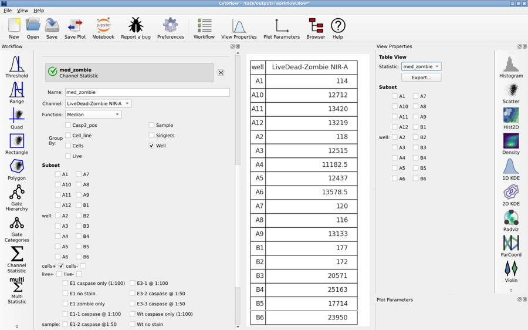
cu click 1148 211; sleep 2; cu click 707 567; cu paste "/task/outputs/cytoflow_exports/med_zombie.csv"; sleep 0.5; cu key Return; sleep 3; cu click 1148 181; sleep 1; cu click 1134 157; sleep 4; cu screenshot /tmp/screen.png
{
"file_path": "/tmp/screen.png"
}/tmp/screen.png
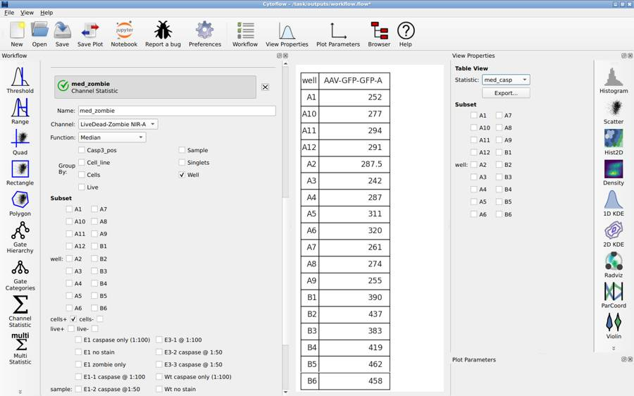
cu click 1148 211; sleep 2; cu click 707 567; cu paste "/task/outputs/cytoflow_exports/med_casp.csv"; sleep 0.5; cu key Return; sleep 3; cd /task/outputs/cytoflow_exports; ls -la; cat med_casp.csv | head -3; cat > /tmp/scripts/tab.py <<'EOF'
import pandas as pd, sys
d='/task/outputs/cytoflow_exports/'
lay=pd.read_csv('/task/inputs/plate_layout.csv')
s=pd.read_csv(d+'n_scatter.csv'); s.columns=['cells','singlets','well','n']
f=pd.read_csv(d+'n_fluor.csv'); f.columns=['casp','live','well','n']
rows=[]
for _,r in lay.iterrows():
w=r.well
a=s[s.well==w]; b=f[f.well==w]
allev=a.n.sum(); cells=a[a.cells==1].n.sum(); sing=a[(a.cells==1)&(a.singlets==1)].n.sum()
live=b[b.live==1].n.sum(); pos=b[(b.live==1)&(b.casp==1)].n.sum()
dead=b[b.live==0].n.sum(); deadpos=b[(b.live==0)&(b.casp==1)].n.sum()
assert b.n.sum()==sing,(w,b.n.sum(),sing)
rows.append(dict(well=w,sample=r['sample'],all=int(allev),cells=int(cells),singlets=int(sing),live=int(live),pos=int(pos),dead=int(dead),deadpos=int(deadpos)))
t=pd.DataFrame(rows)
t['%cells']=100*t.cells/t['all']; t['%sing']=100*t.singlets/t.cells; t['%live']=100*t.live/t.singlets; t['%pos']=100*t.pos/t.live
t['%pos_dead']=100*t.deadpos/t.dead.where(t.dead>0)
mc=pd.read_csv(d+'med_casp.csv'); mc.columns=['well','med_casp']; mz=pd.read_csv(d+'med_zombie.csv'); mz.columns=['well','med_zombie']
t=t.merge(mc).merge(mz)
pd.set_option('display.width',250); print(t.round(2).to_string()); print(t['all'].sum())
EOF
python3 /tmp/scripts/tab.pytotal 24 drwxrwsrwx 2 root task 4096 Nov 10 19:31 . drwxrwsrwx 3 agent task 4096 Nov 10 19:27 .. -rw-rw-r-- 1 cfapp task 184 Nov 10 19:31 med_casp.csv -rw-rw-r-- 1 cfapp task 216 Nov 10 19:30 med_zombie.csv -rw-rw-r-- 1 cfapp task 782 Nov 10 19:30 n_fluor.csv -rw-rw-r-- 1 cfapp task 1037 Nov 10 19:28 n_scatter.csv well,AAV-GFP-GFP-A A1,252.0 A10,277.0 well sample all cells singlets live pos dead deadpos %cells %sing %live %pos %pos_dead med_casp med_zombie 0 A1 WT no stain 6969 6388 6214 6214 3 0 0 91.66 97.28 100.00 0.05 NaN 252.0 114.0 1 A2 WT caspase only (1:100) 3149 2558 2492 2492 21 0 0 81.23 97.42 100.00 0.84 NaN 287.5 118.0 2 A3 WT zombie only 5742 5186 5057 4989 0 68 0 90.32 97.51 98.66 0.00 0.00 242.0 12515.0 3 A4 WT-1 caspase @ 1:100 20776 19748 19052 18808 82 244 1 95.05 96.48 98.72 0.44 0.41 287.0 11182.5 4 A5 WT-2 caspase @ 1:50 13119 12600 12207 12097 72 110 0 96.04 96.88 99.10 0.60 0.00 311.0 12437.0 5 A6 WT-3 caspase @ 1:50 21946 21082 20418 20065 125 353 2 96.06 96.85 98.27 0.62 0.57 320.0 13578.5 6 A7 E1 no stain 33911 32667 31721 31721 1 0 0 96.33 97.10 100.00 0.00 NaN 261.0 120.0 7 A8 E1 caspase only (1:100) 52749 51246 49361 49361 79 0 0 97.15 96.32 100.00 0.16 NaN 274.0 116.0 8 A9 E1 zombie only 49297 47657 45953 44887 5 1066 0 96.67 96.42 97.68 0.01 0.00 255.0 13133.0 9 A10 E1-1 caspase @ 1:100 58936 57102 54851 53623 94 1228 3 96.89 96.06 97.76 0.18 0.24 277.0 12712.0 10 A11 E1-2 caspase @1:50 51193 49285 47398 46351 97 1047 2 96.27 96.17 97.79 0.21 0.19 294.0 13420.0 11 A12 E1-3 caspase @ 1:50 51047 48796 47072 45702 139 1370 2 95.59 96.47 97.09 0.30 0.15 291.0 13219.0 12 B1 E3 no stain 26935 23092 21936 21936 128 0 0 85.73 94.99 100.00 0.58 NaN 390.0 177.0 13 B2 E3 caspase only (1:100) 36048 31370 29858 29858 584 0 0 87.02 95.18 100.00 1.96 NaN 437.0 172.0 14 B3 E3 zombie only 46022 40086 38006 37285 246 721 7 87.10 94.81 98.10 0.66 0.97 383.0 20571.0 15 B4 E3-1 @ 1:100 27503 23880 22695 22199 429 496 11 86.83 95.04 97.81 1.93 2.22 419.0 25163.0 16 B5 E3-2 caspase @ 1:50 37596 33417 31837 31191 535 646 15 88.88 95.27 97.97 1.72 2.32 462.0 17714.0 17 B6 E3-3 caspase @ 1:50 24797 21951 20974 20508 348 466 9 88.52 95.55 97.78 1.70 1.93 458.0 23950.0 567735
cu key ctrl+s; sleep 1; cu drag 660 510 425 510; sleep 2; cu click 1393 180; sleep 3; cu screenshot /tmp/screen.png
{
"file_path": "/tmp/screen.png"
}/tmp/screen.png
cu click 1192 181; sleep 1; cu click 1135 470; sleep 3; cu click 1150 244; sleep 1; cu screenshot /tmp/screen.png
{
"file_path": "/tmp/screen.png"
}/tmp/screen.png
cu click 1125 221; sleep 8; cu scroll 1230 860 down 5; sleep 1; cu screenshot /tmp/screen.png
{
"file_path": "/tmp/screen.png"
}/tmp/screen.png
cu drag 1232 804 1232 430; sleep 2; cu screenshot /tmp/screen.png
{
"file_path": "/tmp/screen.png"
}/tmp/screen.png
cu click 1270 607; cu type "6"; cu key Tab; sleep 6; cu click 1135 825; sleep 10; cu screenshot /tmp/screen.png
{
"file_path": "/tmp/screen.png"
}/tmp/screen.png
cu click 61 28; sleep 1; cu screenshot /tmp/screen.png
{
"file_path": "/tmp/screen.png"
}/tmp/screen.png
cu click 100 198; sleep 10; cu screenshot /tmp/screen.png
{
"file_path": "/tmp/screen.png"
}/tmp/screen.png
cp /tmp/screen.png /task/outputs/cytoflow_exports/qc_time_histograms_screenshot.png; cu click 1192 181; sleep 1; cu key Home; sleep 0.5; cu key Return; sleep 8; cu click 1136 211; sleep 1; cu screenshot /tmp/screen.png
{
"file_path": "/tmp/screen.png"
}/tmp/screen.png
cu click 1132 260; sleep 8; cu drag 1232 429 1232 760; sleep 2; cu screenshot /tmp/screen.png
{
"file_path": "/tmp/screen.png"
}/tmp/screen.png
cu click 1393 385; sleep 3; cu screenshot /tmp/screen.png
{
"file_path": "/tmp/screen.png"
}/tmp/screen.png
cu click 1198 181; sleep 1; cu click 1165 183; sleep 2; cu click 1142 211; sleep 1; cu click 1132 260; sleep 2; cu click 1198 241; sleep 1; cu click 1190 386; sleep 3; cu click 1142 271; sleep 1; cu click 1132 320; sleep 3; cu click 1155 305; sleep 1; cu click 1125 282; sleep 3; cu click 1142 378; sleep 1; cu click 1127 402; sleep 3; cu click 1086 543; sleep 5; cu screenshot /tmp/screen.png
{
"file_path": "/tmp/screen.png"
}/tmp/screen.png
cu drag 1232 761 1232 300; sleep 2; cu scroll 1230 700 down 10; sleep 1; cu screenshot /tmp/screen.png
{
"file_path": "/tmp/screen.png"
}/tmp/screen.png
cu click 1270 597; cu type "6"; cu key Tab; sleep 12; cu screenshot /tmp/screen.png
{
"file_path": "/tmp/screen.png"
}/tmp/screen.png
cp /tmp/screen.png /task/outputs/cytoflow_exports/qc_caspase_vs_zombie_by_well_screenshot.png; cu click 1270 597; cu key ctrl+a; cu type "3"; cu key Tab; sleep 3; cu drag 1232 300 1232 770; sleep 2; cu scroll 1180 600 down 20; sleep 1; cu screenshot /tmp/screen.png
{
"file_path": "/tmp/screen.png"
}/tmp/screen.png
cu click 1106 474; sleep 2; for p in "1076 640" "1076 668" "1133 555" "1076 527" "1133 640" "1133 668"; do cu click $p; sleep 2; done; sleep 8; cu screenshot /tmp/screen.png
{
"file_path": "/tmp/screen.png"
}/tmp/screen.png
cp /tmp/screen.png /task/outputs/cytoflow_exports/qc_caspase_vs_zombie_zoom_screenshot.png; cu click 61 28; sleep 1; cu click 100 198; sleep 5; cu screenshot /tmp/screen.png
{
"file_path": "/tmp/screen.png"
}/tmp/screen.png
cu scroll 320 460 up 12; sleep 1; cu screenshot /tmp/screen.png
{
"file_path": "/tmp/screen.png"
}/tmp/screen.png
sleep 3; cu click 267 469; sleep 1; cu screenshot /tmp/screen.png
{
"file_path": "/tmp/screen.png"
}/tmp/screen.png
cu click 260 613; sleep 4; cu scroll 405 300 up 12; sleep 1; cu screenshot /tmp/screen.png
{
"file_path": "/tmp/screen.png"
}/tmp/screen.png
cu click 240 528; sleep 4; cu screenshot /tmp/screen.png
{
"file_path": "/tmp/screen.png"
}/tmp/screen.png
cu click 288 642 double; sleep 0.5; cu key ctrl+a; cu type "3000"; cu key Tab; sleep 15; cu screenshot /tmp/screen.png
{
"file_path": "/tmp/screen.png"
}/tmp/screen.png
cu key ctrl+s; sleep 2; mv /task/outputs/cytoflow_exports/n_fluor.csv /task/outputs/cytoflow_exports/n_fluor_threshold2000_sensitivity.csv; cu click 240 790; sleep 4; cu screenshot /tmp/screen.png
{
"file_path": "/tmp/screen.png"
}/tmp/screen.png
cu click 1393 757; sleep 1; cu screenshot /tmp/screen.png
{
"file_path": "/tmp/screen.png"
}/tmp/screen.png
cu click 1340 680; sleep 3; cu click 1148 181; sleep 1; cu screenshot /tmp/screen.png
{
"file_path": "/tmp/screen.png"
}/tmp/screen.png
cu click 1124 206; sleep 4; cu click 1148 211; sleep 2; cu click 707 567; cu paste "/task/outputs/cytoflow_exports/n_fluor.csv"; sleep 0.5; cu key Return; sleep 3; cu screenshot /tmp/screen.png; ls -la /task/outputs/cytoflow_exports/; python3 /tmp/scripts/tab.py
{
"file_path": "/tmp/screen.png"
}/tmp/screen.png total 548 drwxrwsrwx 2 root task 4096 Nov 10 19:38 . drwxrwsrwx 3 agent task 4096 Nov 10 19:27 .. -rw-rw-r-- 1 cfapp task 184 Nov 10 19:31 med_casp.csv -rw-rw-r-- 1 cfapp task 216 Nov 10 19:30 med_zombie.csv -rw-rw-r-- 1 cfapp task 733 Nov 10 19:38 n_fluor.csv -rw-rw-r-- 1 cfapp task 782 Nov 10 19:30 n_fluor_threshold2000_sensitivity.csv -rw-rw-r-- 1 cfapp task 1037 Nov 10 19:28 n_scatter.csv -rw-r--r-- 1 root task 193906 Nov 10 19:35 qc_caspase_vs_zombie_by_well_screenshot.png -rw-r--r-- 1 root task 181461 Nov 10 19:36 qc_caspase_vs_zombie_zoom_screenshot.png -rw-r--r-- 1 root task 149655 Nov 10 19:33 qc_time_histograms_screenshot.png well sample all cells singlets live pos dead deadpos %cells %sing %live %pos %pos_dead med_casp med_zombie 0 A1 WT no stain 6969 6388 6214 6214 0 0 0 91.66 97.28 100.00 0.00 NaN 252.0 114.0 1 A2 WT caspase only (1:100) 3149 2558 2492 2492 16 0 0 81.23 97.42 100.00 0.64 NaN 287.5 118.0 2 A3 WT zombie only 5742 5186 5057 4989 0 68 0 90.32 97.51 98.66 0.00 0.00 242.0 12515.0 3 A4 WT-1 caspase @ 1:100 20776 19748 19052 18808 67 244 0 95.05 96.48 98.72 0.36 0.00 287.0 11182.5 4 A5 WT-2 caspase @ 1:50 13119 12600 12207 12097 65 110 0 96.04 96.88 99.10 0.54 0.00 311.0 12437.0 5 A6 WT-3 caspase @ 1:50 21946 21082 20418 20065 108 353 2 96.06 96.85 98.27 0.54 0.57 320.0 13578.5 6 A7 E1 no stain 33911 32667 31721 31721 1 0 0 96.33 97.10 100.00 0.00 NaN 261.0 120.0 7 A8 E1 caspase only (1:100) 52749 51246 49361 49361 70 0 0 97.15 96.32 100.00 0.14 NaN 274.0 116.0 8 A9 E1 zombie only 49297 47657 45953 44887 0 1066 0 96.67 96.42 97.68 0.00 0.00 255.0 13133.0 9 A10 E1-1 caspase @ 1:100 58936 57102 54851 53623 71 1228 2 96.89 96.06 97.76 0.13 0.16 277.0 12712.0 10 A11 E1-2 caspase @1:50 51193 49285 47398 46351 78 1047 0 96.27 96.17 97.79 0.17 0.00 294.0 13420.0 11 A12 E1-3 caspase @ 1:50 51047 48796 47072 45702 118 1370 1 95.59 96.47 97.09 0.26 0.07 291.0 13219.0 12 B1 E3 no stain 26935 23092 21936 21936 20 0 0 85.73 94.99 100.00 0.09 NaN 390.0 177.0 13 B2 E3 caspase only (1:100) 36048 31370 29858 29858 315 0 0 87.02 95.18 100.00 1.05 NaN 437.0 172.0 14 B3 E3 zombie only 46022 40086 38006 37285 46 721 3 87.10 94.81 98.10 0.12 0.42 383.0 20571.0 15 B4 E3-1 @ 1:100 27503 23880 22695 22199 239 496 7 86.83 95.04 97.81 1.08 1.41 419.0 25163.0 16 B5 E3-2 caspase @ 1:50 37596 33417 31837 31191 237 646 6 88.88 95.27 97.97 0.76 0.93 462.0 17714.0 17 B6 E3-3 caspase @ 1:50 24797 21951 20974 20508 165 466 2 88.52 95.55 97.78 0.80 0.43 458.0 23950.0 567735
cu key ctrl+s; sleep 2; python3 /tmp/scripts/readflow.py /task/outputs/workflow.flow 2>&1 | cut -c1-330 | grep -v "subset_list\|item keys"; cu click 61 28; sleep 1; cu click 100 198; sleep 3; cu click 1393 385; sleep 3; cu screenshot /tmp/screen.png
{
"file_path": "/tmp/screen.png"
}{'channels_list': [], 'events': None, 'ignore_v_bool': False, 'name_metadata': None, '__tag__': 'import;4'}
{'name': 'cells', 'vertices': [[149493.24404528458, 40564.55912778409], [149493.24404528458, 301902.39281663264], [280347.8734432888, 649808.3839149122], [549908.4100031775, 969947.2301837517], [973877.4092527112, 969947.2301837517], [973877.4092527112, 501172.4910043797], [599633.1691744191, 149999.7769849894], [400734.13248945
{'name': 'singlets', 'vertices': [[138133.65242922277, 50576.90224802468], [138133.65242922277, 115165.91941865621], [984344.8840171295, 660258.0794798951], [984344.8840171295, 396030.2819636751]], 'xchannel': 'FSC-A', 'xscale': 'linear', 'ychannel': 'FSC-H', 'yscale': 'linear', '__tag__': 'polygon;1'}
{'channel': 'LiveDead-Zombie NIR-A', 'high': 80000.0, 'low': -100000.0, 'name': 'live', '__tag__': 'range;1'}
{'channel': 'AAV-GFP-GFP-A', 'name': 'casp3_pos', 'threshold': 3000.0, '__tag__': 'threshold;1'}
/tmp/screen.pngcu click 1198 181; sleep 1; cu click 1135 254; sleep 2; cu click 1198 241; sleep 1; cu click 1135 457; sleep 3; cu click 1155 305; sleep 1; cu click 1125 282; sleep 3; cu click 1142 378; sleep 1; cu click 1127 402; sleep 3; cu drag 1232 769 1232 300; sleep 2; cu scroll 1230 700 down 10; sleep 1; cu screenshot /tmp/screen.png
{
"file_path": "/tmp/screen.png"
}/tmp/screen.png
cu click 1270 597; cu type "6"; cu key Tab; sleep 14; cu screenshot /tmp/screen.png
{
"file_path": "/tmp/screen.png"
}/tmp/screen.png
cp /tmp/screen.png /task/outputs/cytoflow_exports/qc_fsc_ssc_by_well_screenshot.png; cu drag 1232 300 1232 770; sleep 1; cu click 61 28; sleep 1; cu click 100 198; sleep 4; cu drag 425 510 660 510; sleep 2; cu scroll 500 500 down 30; sleep 1; cu screenshot /tmp/screen.png
{
"file_path": "/tmp/screen.png"
}/tmp/screen.png
cu click 300 845; sleep 4; cu click 45 180; sleep 3; cu scroll 648 600 down 30; sleep 1; cu screenshot /tmp/screen.png
{
"file_path": "/tmp/screen.png"
}/tmp/screen.png
cu click 400 785; cu type "ssc_offscale"; cu key Tab; sleep 1; cu click 277 816; sleep 1; cu screenshot /tmp/screen.png
{
"file_path": "/tmp/screen.png"
}/tmp/screen.png
cu click 215 816; sleep 5; cu screenshot /tmp/screen.png
{
"file_path": "/tmp/screen.png"
}/tmp/screen.png
cu click 400 846; cu type "1040000"; cu key Tab; sleep 6; cu click 45 705; sleep 3; cu scroll 648 600 down 40; sleep 1; cu screenshot /tmp/screen.png
{
"file_path": "/tmp/screen.png"
}/tmp/screen.png
cu scroll 648 400 up 3; sleep 1; cu screenshot /tmp/screen.png
{
"file_path": "/tmp/screen.png"
}/tmp/screen.png
cu click 400 167; cu type "n_ssc"; cu key Tab; sleep 1; cu click 267 197; sleep 1; cu click 215 414; sleep 2; cu click 254 227; sleep 1; cu click 205 228; sleep 2; cu click 413 313; sleep 2; cu click 413 341; sleep 6; cu screenshot /tmp/screen.png
{
"file_path": "/tmp/screen.png"
}/tmp/screen.png
cu key ctrl+s; sleep 2; cu click 1393 757; sleep 1; cu screenshot /tmp/screen.png
{
"file_path": "/tmp/screen.png"
}/tmp/screen.png
cu click 1340 680; sleep 3; cu click 1148 181; sleep 1; cu screenshot /tmp/screen.png
{
"file_path": "/tmp/screen.png"
}/tmp/screen.png
mkdir -p /tmp/final_exports && chmod 777 /tmp/final_exports
expo() { cu click 1148 211; sleep 2; cu click 707 567; cu paste "$1"; sleep 0.5; cu key Return; sleep 3; }
cu click 1120 302; sleep 4; expo /task/outputs/cytoflow_exports/n_ssc.csv
# re-export the others from the final workflow state to a temp folder for verification
cu click 1148 181; sleep 1; cu screenshot /tmp/screen.png{
"file_path": "/tmp/screen.png"
}/tmp/screen.png
expo() { cu click 1148 211; sleep 2; cu click 707 567; cu paste "$1"; sleep 0.5; cu key Return; sleep 3; }
cu click 1140 157; sleep 4; expo /tmp/final_exports/n_scatter.csv
for n in n_fluor med_zombie med_casp; do cu click 1148 181; sleep 1; cu click 1140 157; sleep 4; expo /tmp/final_exports/$n.csv; done
cu screenshot /tmp/screen.png; cd /tmp/final_exports; ls -la; for f in n_scatter n_fluor med_zombie med_casp; do cmp $f.csv /task/outputs/cytoflow_exports/$f.csv && echo "$f identical"; done; cat /task/outputs/cytoflow_exports/n_ssc.csv | tail -19/tmp/screen.png total 24 drwxrwxrwx 2 root root 4096 Nov 10 19:44 . drwxrwxrwx 10 root root 4096 Nov 10 19:43 .. -rw-rw-r-- 1 cfapp cfapp 184 Nov 10 19:44 med_casp.csv -rw-rw-r-- 1 cfapp cfapp 216 Nov 10 19:43 med_zombie.csv -rw-rw-r-- 1 cfapp cfapp 733 Nov 10 19:43 n_fluor.csv -rw-rw-r-- 1 cfapp cfapp 1037 Nov 10 19:43 n_scatter.csv n_scatter identical n_fluor identical med_zombie identical med_casp identical 0,B6,23957.0 1,A1,14.0 1,A10,62.0 1,A11,50.0 1,A12,49.0 1,A2,12.0 1,A3,14.0 1,A4,48.0 1,A5,19.0 1,A6,31.0 1,A7,33.0 1,A8,55.0 1,A9,43.0 1,B1,1001.0 1,B2,1221.0 1,B3,1880.0 1,B4,1039.0 1,B5,1480.0 1,B6,840.0 Shell cwd was reset to /task
cu key ctrl+s; sleep 3; cu screenshot /tmp/screen.png; ls -la --time-style=full-iso /task/outputs/workflow.flow; date; python3 /tmp/scripts/readflow.py /task/outputs/workflow.flow 2>&1 | grep -o "'name': '[a-z_0-9]*'\|'threshold': [0-9.]*\|'high': [0-9.]*\|'function_name': '[A-Za-z]*'\|'by': \[[^]]*\]"
{
"skill": "dataviz"
}/tmp/screen.png -rw-rw-r-- 1 cfapp task 187739 2026-11-10 19:44:23.344429489 +0000 /task/outputs/workflow.flow Tue Nov 10 19:44:26 UTC 2026 'name': 'cells' 'name': 'singlets' 'high': 80000.0 'name': 'live' 'name': 'casp3_pos' 'threshold': 3000.0 'by': ['cells', 'singlets', 'well'] 'function_name': 'Count' 'name': 'n_scatter' 'name': 'casp3_pos' 'name': 'cell_line' 'name': 'cells' 'name': 'live' 'name': 'sample' 'name': 'singlets' 'name': 'well' 'by': ['casp3_pos', 'live', 'well'] 'function_name': 'Count' 'name': 'n_fluor' 'name': 'casp3_pos' 'name': 'cell_line' 'name': 'cells' 'name': 'live' 'name': 'sample' 'name': 'singlets' 'name': 'well' 'by': ['well'] 'function_name': 'Median' 'name': 'med_casp' 'name': 'casp3_pos' 'name': 'cell_line' 'name': 'cells' 'name': 'live' 'name': 'sample' 'name': 'singlets' 'name': 'well' 'by': ['well'] 'function_name': 'Median' 'name': 'med_zombie' 'name': 'casp3_pos' 'name': 'cell_line' 'name': 'cells' 'name': 'live' 'name': 'sample' 'name': 'singlets' 'name': 'well' 'name': 'ssc_offscale' 'threshold': 1040000.0 'by': ['ssc_offscale', 'well'] 'function_name': 'Count' 'name': 'n_ssc' 'name': 'casp3_pos' 'name': 'cell_line' 'name': 'cells' 'name': 'live' 'name': 'sample' 'name': 'singlets' 'name': 'ssc_offscale' 'name': 'well'
Launching skill: dataviz
D=/tmp/claude-0/bundled-skills/2.1.322/a08008b84f8c0955d06a12deda8ffb2a/dataviz; grep -n -i "categorical\|#[0-9a-f]\{6\}" $D/references/palette.md | head -50; which node18: --surface-1: #fcfcfb; /* chart surface */ 19: --text-primary: #0b0b0b; 20: --text-secondary: #52514e; 21: --series-1: #2a78d6; /* categorical slot 1 */ 27: --surface-1: #1a1a19; 28: --text-primary: #f0efec; 29: --text-secondary: #c3c2b7; 30: --series-1: #3987e5; 35: --surface-1: #1a1a19; 36: --text-primary: #f0efec; 37: --text-secondary: #c3c2b7; 38: --series-1: #3987e5; 47:## Categorical palette 54:| 1 | blue | `#2a78d6` | `#3987e5` | 55:| 2 | orange | `#eb6834` | `#d95926` | 56:| 3 | aqua | `#1baf7a` | `#199e70` | 57:| 4 | yellow | `#eda100` | `#c98500` | 58:| 5 | magenta | `#e87ba4` | `#d55181` | 59:| 6 | green | `#008300` | `#008300` | 60:| 7 | violet | `#6250d6` | `#9085e9` | 61:| 8 | red | `#e34948` | `#e66767` | 86:pure re-order. Light slot 7 has since been lightened, `#4a3aa7` -> `#6250d6` 103:once, the second takes the next categorical slot's hue (orange), each as its own 108:| 100 | `#cde2fb` | 250 | `#86b6ef` | 400 | `#3987e5` | 550 | `#1c5cab` | 109:| 150 | `#b7d3f6` | 300 | `#6da7ec` | 450 | `#2a78d6` | 600 | `#184f95` | 110:| 200 | `#9ec5f4` | 350 | `#5598e7` | 500 | `#256abf` | 650 | `#104281` | 111:| | | | | | | 700 | `#0d366b` | 117:must still clear 2:1: on light, start no lighter than **step 250** (`#86b6ef`, 118:2.06:1); on dark, go no darker than **step 600** (`#184f95`, 2.15:1). 123:(light `#f0efec`, dark `#383835`). Equal step count per arm. (blue<->aqua was 130:| good | `#0ca30c` | 3.27 | 5.19 | 131:| warning | `#fab219` | 1.79 | 9.49 | 132:| serious | `#ec835a` | 2.57 | 6.60 | 133:| critical | `#d03b3b` | 4.68 | 3.62 | 135:Dark: same four steps - all clear 3:1 on the dark surface (`#1a1a19`) and remain 136:distinct from the dark categorical slots. On the light surface, warning and 139:from the categorical slots so a status color never impersonates a series - 142:(unsimulated Delta E >= 15), around nine categorical-vs-status pairs per mode sit 145:green `#006300` sits 10.1 from the series green; green vs status-good (9.7) 160:- Light chart surface: `#fcfcfb` 161:- Dark chart surface: `#1a1a19` 173:| Chart surface | `#fcfcfb` | `#1a1a19` | 174:| Page plane | `#f9f9f7` | `#0d0d0d` | 175:| Primary ink | `#0b0b0b` | `#f0efec` | 176:| Secondary ink | `#52514e` | `#c3c2b7` | 177:| Muted (axis/labels) | `#898781` | `#898781` | 178:| Label inside a categorical or status fill | `#ffffff`, except `#0b0b0b` on yellow and warning | `#ffffff`, except `#0b0b0b` on warning | 179:| Gridline (hairline) | `#e1e0d9` | `#2c2c2a` | 180:| Baseline / axis | `#c3c2b7` | `#383835` | 181:| Delta up good (success text) | `#006300` | `#0ca30c` | /usr/bin/node
D=/tmp/claude-0/bundled-skills/2.1.322/a08008b84f8c0955d06a12deda8ffb2a/dataviz; node $D/scripts/validate_palette.js "#2a78d6,#eb6834" --mode light 2>&1 | tail -25; sed -n 1,60p $D/references/anti-patterns.md | cut -c1-220
(node:3387) Warning: To load an ES module, set "type": "module" in the package.json or use the .mjs extension.
(Use `node --trace-warnings ...` to show where the warning was created)
/tmp/claude-0/bundled-skills/2.1.322/a08008b84f8c0955d06a12deda8ffb2a/dataviz/scripts/validate_palette.js:86
export const contrast = (a, b) => { const [hi, lo] = [relLum(a), relLum(b)].sort((x, y) => y - x); return (hi + 0.05) / (lo + 0.05); };
^^^^^^
SyntaxError: Unexpected token 'export'
at internalCompileFunction (node:internal/vm:73:18)
at wrapSafe (node:internal/modules/cjs/loader:1274:20)
at Module._compile (node:internal/modules/cjs/loader:1320:27)
at Module._extensions..js (node:internal/modules/cjs/loader:1414:10)
at Module.load (node:internal/modules/cjs/loader:1197:32)
at Module._load (node:internal/modules/cjs/loader:1013:12)
at Function.executeUserEntryPoint [as runMain] (node:internal/modules/run_main:128:12)
at node:internal/main/run_main_module:28:49
Node.js v18.19.1
# Anti-patterns - what goes wrong
Check every chart against this list. If your output matches an entry, it is wrong -
fix it before shipping. These are real failure modes, each caught in shipping
dashboards.
## Color & encoding
**Bad: Dual-axis charts (two y-scales on one plot).**
Why it misleads: the alignment of the two scales is arbitrary, so the chart invents a
correlation that isn't in the data. Real example: an "Adoption" chart plotting Users
(0-30k) against Sessions (0-800k) - a reviewer flagged it as looking "hallucinated."
Good: Do instead: two charts, small multiples, or index both series to a common base
(=100 at t0) on **one** axis.
**Bad: Recolor-on-filter.** Assigning colors by current rank, so filtering out a series
repaints the survivors.
Why: a reader who learned "Acme is blue" is now misled.
Good: Color follows the entity, not its row number. Survivors keep their hue.
**Bad: Cycling / generating hues past 8.** A 9th categorical color, generated or reused.
Why: indistinguishable from an existing slot under CVD; breaks the order check.
Good: Fold the tail into "Other," facet into small multiples, or use composite encoding.
**Bad: Eyeballing colorblind-safety.** "These look different enough."
Good: Run `scripts/validate_palette.js`. Adjacent Delta E >= 8 (OKLab ×100), or 6-8 WITH secondary encoding.
**Bad: A value-ramp on nominal categories.** Coloring each bar darker-where-bigger
when the categories have no natural order (products, teams, endpoints).
Why: it double-encodes bar length as hue, burns the only free channel on
information the chart already shows, and fails the categorical checks by design
(a ramp spans the lightness band and drops below the chroma floor).
Good: One series -> one color (slot 1) for every bar. Ordered categories (funnel,
tiers, age bands) -> the ordinal ramp, validated with `--ordinal`.
**Bad: Rainbow / non-neighbor sequential.** A multi-hue ramp for magnitude.
Good: One hue, light->dark. (Analogous neighbors or semantic heat are the only multi-hue
sequential exceptions, always with a scale legend.)
**Bad: A hue at the diverging midpoint, or two cool hues as the two poles.**
Why: the midpoint must read as "nothing"; poles must read as opposite. blue<->aqua
fails this (both cool); blue<->red or blue<->orange succeed (warm/cool).
Good: Two hues that read as opposite + a neutral gray midpoint.
**Bad: Status color used for a non-status series** (or a series color used for status).
Good: Status tokens only when the color *means* good/bad; categorical when it's identity.
## Form
**Bad: Eight categorical hues when the story is one number.** The most common way a
chart misses its point.
Good: Emphasis (highlight one, gray the rest), or a stat tile / hero number.
**Bad: A one-bar bar chart, or a 2-slice pie.**
Good: A stat tile. The number is the chart.
**Bad: A donut/pie for comparing close values.**
Good: Ranked bars, or the numbers. Part-to-whole at a glance only, <= 6 segments: the tall
segmented bar (`choosing-a-form.md`).D=/tmp/claude-0/bundled-skills/2.1.322/a08008b84f8c0955d06a12deda8ffb2a/dataviz; cp $D/scripts/validate_palette.js /tmp/scripts/validate_palette.mjs; node /tmp/scripts/validate_palette.mjs "#2a78d6,#eb6834" --mode light 2>&1 | tail -25
(Bash completed with no output)
cd /tmp/scripts; grep -n "process.argv\|import.meta\|console" validate_palette.mjs | head -20
29: * -> logs a console.table of the report and console.warn on any FAIL.
277: console.log(`\nPalette (${mode}, surface ${surface}, ${kind}): ${n} slots`);
279: console.log(` [${(GLYPH[state] ?? state).padEnd(4)}] ${name.padEnd(22)} ${detail}`);
282: console.log(`\n \u2192 ${ok ? "ALL CHECKS PASS" : "FAILED \u2014 fix the marked checks"}`
285: console.log(`\n \u2192 ${ok ? "ALL CHECKS PASS" : "FAILED \u2014 fix the marked checks"}`
287: console.log(" scope: categorical palettes only. For a lone status/text color check"
293:if (typeof process !== "undefined" && process.argv && process.argv[1] && process.argv[1].endsWith("validate_palette.js")) {
294: const args = process.argv.slice(2);
303: else if (a.startsWith("--")) { console.error(`unknown flag: ${a}`); process.exit(2); }
305: else { console.error(`unexpected extra positional: ${a}`); process.exit(2); }
309: console.error(`--${k} must be one of: ${allowed.join(", ")} (got ${JSON.stringify(opts[k])})`); process.exit(2);
313: if (!palette.length) { console.error("usage: node validate_palette.js \"#hex,#hex,...\" [--mode light|dark] [--surface #hex] [--pairs adjacent|all] [--ordinal]"); process.exit(2); }
320: if (badHex.length) { console.error(`invalid hex value(s): ${badHex.join(", ")} \u2014 expected #rrggbb`); process.exit(2); }
346: console.warn(`validate_palette: ${!palette.length ? "empty palette" : badEnum ? `unrecognized ${badEnum}` : `invalid hex value(s): ${badHex.join(", ")} \u2014 expected #rrggbb`} \u2014 not validating`);
349: console.table(result.report.map(([name, state, detail]) => ({ check: name, result: GLYPH[state] ?? state, detail })));
350: if (!result.ok) console.warn("validate_palette: FAILED \u2014 fix the marked checks");
Shell cwd was reset to /taskmkdir -p /tmp/scripts/vp && cp /tmp/scripts/validate_palette.mjs /tmp/scripts/vp/validate_palette.js && echo '{"type":"module"}' > /tmp/scripts/vp/package.json && node /tmp/scripts/vp/validate_palette.js "#2a78d6,#eb6834" --mode light 2>&1 | tail -15Palette (light, surface #fcfcfb, categorical): 2 slots [PASS] Lightness band all 2 inside L 0.43–0.77 [PASS] Chroma floor all 2 >= 0.1 [PASS] CVD separation worst adjacent #eb6834↔#2a78d6 ΔE 24.7 (protan) · tritan 32.7 [PASS] Normal-vision floor worst adjacent #eb6834↔#2a78d6 ΔE 33.6 (normal) [PASS] Contrast vs surface all 2 >= 3:1 → ALL CHECKS PASS (CVD in the 6–8 floor band is legal ONLY with secondary encoding: direct labels, gaps, or texture) scope: categorical palettes only. For a lone status/text color check text contrast with this script's apca() or contrast(); for a sequential ramp, lightness monotonicity.
{
"file_path": "/tmp/scripts/make_outputs.py",
"content": "\"\"\"Build deliverables from tables exported from Cytoflow (no FCS parsing here).\"\"\"\nimport math\nimport numpy as np\nimport pandas as pd\nimport matplotlib\nmatplotlib.use(\"Agg\")\nimport matplotlib.pyplot as plt\n\nEXP = \"/task/outputs/cytoflow_exports/\"\nOUT = \"/task/outputs/\"\n\nlay = pd.read_csv(\"/task/inputs/plate_layout.csv\")\nsc = pd.read_csv(EXP + \"n_scatter.csv\"); sc.columns = [\"cells\", \"singlets\", \"well\", \"n\"]\nfl = pd.read_csv(EXP + \"n_fluor.csv\"); fl.columns = [\"casp\", \"live\", \"well\", \"n\"]\nss = pd.read_csv(EXP + \"n_ssc.csv\"); ss.columns = [\"off\", \"well\", \"n\"]\nmc = pd.read_csv(EXP + \"med_casp.csv\"); mc.columns = [\"well\", \"med_casp\"]\nmz = pd.read_csv(EXP + \"med_zombie.csv\"); mz.columns = [\"well\", \"med_zombie\"]\n\nrows = []\nfor _, r in lay.iterrows():\n w = r.well\n a, b, c = sc[sc.well == w], fl[fl.well == w], ss[ss.well == w]\n d = dict(file=r.file, well=w, sample=r[\"sample\"], cell_line=r.cell_line)\n d[\"all_events\"] = int(a.n.sum())\n d[\"cells\"] = int(a[a.cells == 1].n.sum())\n d[\"singlets\"] = int(a[(a.cells == 1) & (a.singlets == 1)].n.sum())\n d[\"live\"] = int(b[b.live == 1].n.sum())\n d[\"casp3_pos\"] = int(b[(b.live == 1) & (b.casp == 1)].n.sum())\n d[\"dead\"] = int(b[b.live == 0].n.sum())\n d[\"ssc_offscale\"] = int(c[c.off == 1].n.sum())\n assert int(b.n.sum()) == d[\"singlets\"], w # n_fluor is computed on cells+ & singlets+\n assert int(c.n.sum()) == d[\"all_events\"], w\n rows.append(d)\nt = pd.DataFrame(rows).merge(mc).merge(mz)\nassert t.all_events.sum() == 567735\nt[\"pct_pos\"] = 100 * t.casp3_pos / t.live\nt[\"pct_off\"] = 100 * t.ssc_offscale / t.all_events\nt[\"pct_cells\"] = 100 * t.cells / t.all_events\nt[\"pct_live\"] = 100 * t.live / t.singlets\n\n\ndef wilson(k, n, z=1.96):\n p = k / n\n den = 1 + z * z / n\n c = (p + z * z / (2 * n)) / den\n h = z * math.sqrt(p * (1 - p) / n + z * z / (4 * n * n)) / den\n return 100 * (c - h), 100 * (c + h)\n\n\n# ---------------- counts.csv ----------------\npops = [(\"all_events\", \"other\", \"none\"), (\"cells\", \"cells\", \"all_events\"),\n (\"singlets\", \"singlets\", \"cells\"), (\"live\", \"live\", \"singlets\"),\n (\"casp3_pos\", \"marker_positive\", \"live\"), (\"ssc_offscale\", \"other\", \"all_events\")]\nout = []\nfor _, r in t.iterrows():\n for pop, role, parent in pops:\n cnt = int(r[pop])\n if parent == \"none\":\n pct = \"\"\n else:\n pc = int(r[parent])\n pct = \"\" if pc == 0 else f\"{100 * cnt / pc:.4f}\"\n out.append(dict(file=r.file, well=r.well, population=pop, role=role, parent=parent,\n count=cnt, pct_of_parent=pct))\npd.DataFrame(out)[[\"file\", \"well\", \"population\", \"role\", \"parent\", \"count\", \"pct_of_parent\"]].to_csv(\n OUT + \"counts.csv\", index=False)\n\n# ---------------- flags.csv ----------------\nflags = []\nfor _, r in t.iterrows():\n if r.all_events < 10000:\n lo, hi = wilson(r.casp3_pos, r.live)\n ev = (f\"Only {r.all_events} events acquired ({r.live} live singlets) vs 13119-58936 in the other wells; \"\n f\"time trace is continuous over the full acquisition (no clog/ran-dry), i.e. low cell recovery. \"\n f\"casp3_pos = {r.casp3_pos}/{r.live} = {r.pct_pos:.2f}% (95% CI {lo:.2f}-{hi:.2f}%), so the \"\n f\"rare-event estimate is imprecise. Control well only; not used in the dilution/genotype comparisons.\")\n flags.append((r.file, r.well, \"too_few_events\", ev, \"keep_with_note\"))\n elif r.cell_line == \"E3\":\n ev = (f\"{r.ssc_offscale}/{r.all_events} events ({r.pct_off:.1f}%) are off-scale on SSC-A (>=1040000) at SSC 290 V, \"\n f\"vs <=0.4% in every WT/E1 well; only {r.pct_cells:.1f}% of events fall in the cells gate \"\n f\"(95-97% in WT/E1 stained wells). Off-scale events are excluded by the cells gate; the largest/most \"\n f\"granular E3 cells are therefore under-represented.\")\n flags.append((r.file, r.well, \"saturation\", ev, \"keep_with_note\"))\n else:\n flags.append((r.file, r.well, \"none\", \"\", \"keep\"))\nfl_df = pd.DataFrame(flags, columns=[\"file\", \"well\", \"issue_type\", \"evidence\", \"decision\"])\nfl_df.to_csv(OUT + \"flags.csv\", index=False)\n\n# ---------------- condition_summary.csv ----------------\nMETRIC = (\"casp3_pos / live x 100 (% of live single cells that are cleaved-caspase-3 positive; \"\n \"BL1-A [FCS label AAV-GFP-GFP-A] > 3000; units: %)\")\nconds = []\nfor line, base in ((\"WT\", [\"A1\", \"A2\", \"A3\", \"A4\", \"A5\", \"A6\"]),\n (\"E1\", [\"A7\", \"A8\", \"A9\", \"A10\", \"A11\", \"A12\"]),\n (\"E3\", [\"B1\", \"B2\", \"B3\", \"B4\", \"B5\", \"B6\"])):\n conds += [(f\"{line}_unstained\", base[0:1]),\n (f\"{line}_zombie_only_FMO\", base[2:3]),\n (f\"{line}_antibody_only_1to100_no_zombie\", base[1:2]),\n (f\"{line}_stained_1to100\", base[3:4]),\n (f\"{line}_stained_1to50\", base[4:6]),\n (f\"{line}_stained_all_dilutions\", base[3:6])]\nconds.append((\"PGRN_KO_E1_E3_stained_all_dilutions\", [\"A10\", \"A11\", \"A12\", \"B4\", \"B5\", \"B6\"]))\ntw = t.set_index(\"well\")\ncs = []\nfor name, wells in conds:\n v = tw.loc[wells, \"pct_pos\"].values\n cs.append(dict(condition=name, wells=\";\".join(wells), n_wells_used=len(wells),\n mean=round(float(np.mean(v)), 4),\n sd=(round(float(np.std(v, ddof=1)), 4) if len(v) > 1 else \"\"),\n metric_definition=METRIC, normalisation_applied=\"none\"))\ncs = pd.DataFrame(cs)\ncs.to_csv(OUT + \"condition_summary.csv\", index=False)\n\npd.set_option(\"display.width\", 250)\nprint(t[[\"well\", \"sample
… [5,407 more characters not shown]File created successfully at: /tmp/scripts/make_outputs.py (file state is current in your context — no need to Read it back)
cd /tmp/scripts && python3 make_outputs.py && head -8 /task/outputs/counts.csv && cat /task/outputs/flags.csv | cut -c1-260
{
"file_path": "/task/outputs/figure.png"
} well sample all_events cells singlets live casp3_pos dead ssc_offscale pct_cells pct_live pct_pos pct_off med_casp med_zombie
0 A1 WT no stain 6969 6388 6214 6214 0 0 14 91.66 100.00 0.00 0.20 252.0 114.0
1 A2 WT caspase only (1:100) 3149 2558 2492 2492 16 0 12 81.23 100.00 0.64 0.38 287.5 118.0
2 A3 WT zombie only 5742 5186 5057 4989 0 68 14 90.32 98.66 0.00 0.24 242.0 12515.0
3 A4 WT-1 caspase @ 1:100 20776 19748 19052 18808 67 244 48 95.05 98.72 0.36 0.23 287.0 11182.5
4 A5 WT-2 caspase @ 1:50 13119 12600 12207 12097 65 110 19 96.04 99.10 0.54 0.14 311.0 12437.0
5 A6 WT-3 caspase @ 1:50 21946 21082 20418 20065 108 353 31 96.06 98.27 0.54 0.14 320.0 13578.5
6 A7 E1 no stain 33911 32667 31721 31721 1 0 33 96.33 100.00 0.00 0.10 261.0 120.0
7 A8 E1 caspase only (1:100) 52749 51246 49361 49361 70 0 55 97.15 100.00 0.14 0.10 274.0 116.0
8 A9 E1 zombie only 49297 47657 45953 44887 0 1066 43 96.67 97.68 0.00 0.09 255.0 13133.0
9 A10 E1-1 caspase @ 1:100 58936 57102 54851 53623 71 1228 62 96.89 97.76 0.13 0.11 277.0 12712.0
10 A11 E1-2 caspase @1:50 51193 49285 47398 46351 78 1047 50 96.27 97.79 0.17 0.10 294.0 13420.0
11 A12 E1-3 caspase @ 1:50 51047 48796 47072 45702 118 1370 49 95.59 97.09 0.26 0.10 291.0 13219.0
12 B1 E3 no stain 26935 23092 21936 21936 20 0 1001 85.73 100.00 0.09 3.72 390.0 177.0
13 B2 E3 caspase only (1:100) 36048 31370 29858 29858 315 0 1221 87.02 100.00 1.05 3.39 437.0 172.0
14 B3 E3 zombie only 46022 40086 38006 37285 46 721 1880 87.10 98.10 0.12 4.09 383.0 20571.0
15 B4 E3-1 @ 1:100 27503 23880 22695 22199 239 496 1039 86.83 97.81 1.08 3.78 419.0 25163.0
16 B5 E3-2 caspase @ 1:50 37596 33417 31837 31191 237 646 1480 88.88 97.97 0.76 3.94 462.0 17714.0
17 B6 E3-3 caspase @ 1:50 24797 21951 20974 20508 165 466 840 88.52 97.78 0.80 3.39 458.0 23950.0
condition wells n_wells_used mean sd
0 WT_unstained A1 1 0.0000
1 WT_zombie_only_FMO A3 1 0.0000
2 WT_antibody_only_1to100_no_zombie A2 1 0.6421
3 WT_stained_1to100 A4 1 0.3562
4 WT_stained_1to50 A5;A6 2 0.5378 0.0007
5 WT_stained_all_dilutions A4;A5;A6 3 0.4773 0.1048
6 E1_unstained A7 1 0.0032
7 E1_zombie_only_FMO A9 1 0.0000
8 E1_antibody_only_1to100_no_zombie A8 1 0.1418
9 E1_stained_1to100 A10 1 0.1324
10 E1_stained_1to50 A11;A12 2 0.2132 0.0636
11 E1_stained_all_dilutions A10;A11;A12 3 0.1863 0.0648
12 E3_unstained B1 1 0.0912
13 E3_zombie_only_FMO B3 1 0.1234
14 E3_antibody_only_1to100_no_zombie B2 1 1.0550
15 E3_stained_1to100 B4 1 1.0766
16 E3_stained_1to50 B5;B6 2 0.7822 0.0316
17 E3_stained_all_dilutions B4;B5;B6 3 0.8803 0.1715
18 PGRN_KO_E1_E3_stained_all_dilutions A10;A11;A12;B4;B5;B6 6 0.5333 0.3974
A1 0.00 [0.00-0.06]
A2 0.64 [0.40-1.04]
A3 0.00 [0.00-0.08]
A4 0.36 [0.28-0.45]
A5 0.54 [0.42-0.68]
A6 0.54 [0.45-0.65]
A7 0.00 [0.00-0.02]
A8 0.14 [0.11-0.18]
A9 0.00 [0.00-0.01]
A10 0.13 [0.10-0.17]
A11 0.17 [0.13-0.21]
A12 0.26 [0.22-0.31]
B1 0.09 [0.06-0.14]
B2 1.05 [0.95-1.18]
B3 0.12 [0.09-0.16]
B4 1.08 [0.95-1.22]
B5 0.76 [0.67-0.86]
B6 0.80 [0.69-0.94]
welch WT->E1 (-4.0896274139783495, 3.333831399263561) WT->E3 (3.474103400761856, 3.3118563617514876) WT->KO (0.32366790471556545, 6.18860239316891)
file,well,population,role,parent,count,pct_of_parent
Caspase_h4_mlk(4)_caspase_Group_A1_WT_no stain.fcs,A1,all_events,other,none,6969,
Caspase_h4_mlk(4)_caspase_Group_A1_WT_no stain.fcs,A1,cells,cells,all_events,6388,91.6631
Caspase_h4_mlk(4)_caspase_Group_A1_WT_no stain.fcs,A1,singlets,singlets,cells,6214,97.2761
Caspase_h4_mlk(4)_caspase_Group_A1_WT_no stain.fcs,A1,live,live,singlets,6214,100.0000
Caspase_h4_mlk(4)_caspase_Group_A1_WT_no stain.fcs,A1,casp3_pos,marker_positive,live,0,0.0000
Caspase_h4_mlk(4)_caspase_Group_A1_WT_no stain.fcs,A1,ssc_offscale,other,all_events,14,0.2009
… [3,087 more characters not shown]cd /tmp/scripts && python3 - <<'EOF'
import re
s = open('make_outputs.py').read()
old_block = s[s.index(" for i, w in enumerate(layout[line]):"):s.index(" ax.set_title(titles[line]")]
new_block = ''' ticklabels = []
for i, w in enumerate(layout[line]):
ws = list(w) if isinstance(w, tuple) else [w]
xs = [i] if len(ws) == 1 else [i - 0.16, i + 0.16]
ab = i >= 2
ticklabels.append(xl[i] + "\\n" + ", ".join(ws))
for j, (x, wl) in enumerate(zip(xs, ws)):
r = tw.loc[wl]
lo, hi = wilson(r.casp3_pos, r.live)
col = BLUE if ab else ORANGE
ax.plot([x, x], [lo, hi], color=col, lw=1.2, alpha=0.55, zorder=2, solid_capstyle="round")
ax.plot(x, r.pct_pos, "o", ms=9, mfc=(col if ab else SURF), mec=col, mew=2, zorder=3, clip_on=False)
if len(ws) == 1:
ax.annotate(f"{r.pct_pos:.2f}", (x, hi), xytext=(0, 5), textcoords="offset points",
ha="center", va="bottom", fontsize=8.5, color=INK2)
else:
ax.annotate(f"{r.pct_pos:.2f}", (x, r.pct_pos), xytext=(-9 if j == 0 else 9, 0),
textcoords="offset points", ha=("right" if j == 0 else "left"), va="center",
fontsize=8.5, color=INK2)
m = tw.loc[list(layout[line][3:4]) + list(layout[line][4]), "pct_pos"].mean()
ax.plot([2.56, 4.44], [m, m], color=INK2, lw=1.1, ls=(0, (4, 3)), zorder=1)
ax.text(3.5, 1.56, f"Ab + Zombie wells (n = 3)\\nmean {m:.2f}% (dashed line)", ha="center", va="top",
fontsize=8.5, color=INK2)
'''
s = s.replace(old_block, new_block)
s = s.replace('ax.set_xticks(range(5)); ax.set_xticklabels(xl, fontsize=8.5, color=INK2)', 'ax.set_xticks(range(5)); ax.set_xticklabels(ticklabels, fontsize=8.5, color=INK2)')
s = s.replace('ax.tick_params(axis="x", length=0, pad=16)', 'ax.tick_params(axis="x", length=0, pad=8)')
s = s.replace('ax.set_xlim(-0.6, 4.6)', 'ax.set_xlim(-0.6, 4.7)')
s = s.replace('bottom=0.17, wspace=0.06', 'bottom=0.19, wspace=0.06')
open('make_outputs.py','w').write(s)
EOF
python3 make_outputs.py > /tmp/scripts/run.log && tail -1 /tmp/scripts/run.log{
"file_path": "/task/outputs/figure.png"
}welch WT->E1 (-4.0896274139783495, 3.333831399263561) WT->E3 (3.474103400761856, 3.3118563617514876) WT->KO (0.32366790471556545, 6.18860239316891) Shell cwd was reset to /task
cd /tmp/scripts && python3 - <<'EOF'
s = open('make_outputs.py').read()
a = ' ax.plot([2.56, 4.44], [m, m], color=INK2, lw=1.1, ls=(0, (4, 3)), zorder=1)\n'
assert a in s
s = s.replace(a, '')
b = 'f"Ab + Zombie wells (n = 3)\\nmean {m:.2f}% (dashed line)"'
assert b in s
s = s.replace(b, 'f"Ab + Zombie wells (n = 3)\\nmean {m:.2f}%"')
open('make_outputs.py','w').write(s)
EOF
python3 make_outputs.py > /tmp/scripts/run.log && echo ok{
"file_path": "/task/outputs/figure.png"
}ok Shell cwd was reset to /task
cp /tmp/scripts/per_well_table.csv /task/outputs/cytoflow_exports/per_well_table_derived.csv cat > /task/outputs/report.md <<'EOF' # EXP22004082 – H4 cleaved caspase-3 intracellular flow, plate of 26-Oct-2022 ## Question Does the Cell Signaling cleaved caspase-3 (Asp175) Alexa Fluor 488 antibody (#9669), used at 1:50 or 1:100 in the fix/perm intracellular protocol with Zombie NIR, give a usable flow-cytometry readout of caspase-3 activation in H4 cells (WT, PGRN KO E1, PGRN KO E3)? Specifically: 1. Is there antibody-specific signal above the unstained and Zombie-only controls? 2. Does 1:50 perform differently from 1:100? 3. Do the PGRN KO lines show more caspase-3-positive cells than WT? ## Methods **Data.** 18 FCS files (Attune NxT), 567,735 events in total, all events used (no subsampling). All gating and counting was done in the Cytoflow 1.3.2 GUI (`workflow.flow`); tables were exported from Cytoflow table views (`cytoflow_exports/`) and only tabulated and plotted in Python. **Channels.** The FCS labels are left over from another experiment. From the plan's cytometer settings, `AAV-GFP-GFP-A` (250 V) is BL1 = cleaved caspase-3 AF488, and `LiveDead-Zombie NIR-A` (350 V) is RL3 = Zombie NIR. The stain controls confirm this: the Zombie channel median is 114–177 in wells without Zombie and 11,183–25,163 in wells with it, and BL1-bright events appear only in antibody wells. **Gates (applied in this order; each is the parent of the next).** | Population | Role | Gate | |---|---|---| | `cells` | cells | Polygon on FSC-A / SSC-A (linear); removes debris and off-scale events | | `singlets` | singlets | Polygon on FSC-A / FSC-H (linear), the diagonal | | `live` | live | Range on Zombie NIR-A, below 80,000 (upper edge of the main Zombie-stained population in the Zombie-only wells) | | `casp3_pos` | marker_positive | Threshold on BL1-A above 3,000 (set on the unstained and Zombie-only controls, all lines overlaid) | | `ssc_offscale` | other (QC only) | Threshold on SSC-A at or above 1,040,000, parent `all_events` | **Metric.** % cleaved-caspase-3 positive = `casp3_pos` / `live` × 100, per well. No normalisation is applied in `condition_summary.csv`; the Zombie-only (FMO) control of each line is listed as its own condition so background can be subtracted. **Replication.** Each flow well is a separate culture well from one plating on one day. Per line there is one Ab+Zombie well at 1:100 and two at 1:50. For the genotype comparison the three Ab+Zombie wells per line are pooled (n = 3), because dilution showed no consistent effect. Error bars in the figure are 95% Wilson intervals from event counts. **QC.** Per-well Time histograms, FSC/SSC density plots and BL1 vs Zombie density plots were inspected in Cytoflow (screenshots in `cytoflow_exports/`). ## Results **Per-well counts and metric (threshold 3,000).** | Well | Sample | All events | Live singlets | casp3_pos | % casp3+ of live | BL1 median | Zombie median | |---|---|---|---|---|---|---|---| | A1 | WT no stain | 6,969 | 6,214 | 0 | 0.00 | 252 | 114 | | A3 | WT Zombie only | 5,742 | 4,989 | 0 | 0.00 | 242 | 12,515 | | A2 | WT Ab only 1:100 | 3,149 | 2,492 | 16 | 0.64 | 288 | 118 | | A4 | WT Ab 1:100 + Zombie | 20,776 | 18,808 | 67 | 0.36 | 287 | 11,183 | | A5 | WT Ab 1:50 + Zombie | 13,119 | 12,097 | 65 | 0.54 | 311 | 12,437 | | A6 | WT Ab 1:50 + Zombie | 21,946 | 20,065 | 108 | 0.54 | 320 | 13,579 | | A7 | E1 no stain | 33,911 | 31,721 | 1 | 0.00 | 261 | 120 | | A9 | E1 Zombie only | 49,297 | 44,887 | 0 | 0.00 | 255 | 13,133 | | A8 | E1 Ab only 1:100 | 52,749 | 49,361 | 70 | 0.14 | 274 | 116 | | A10 | E1 Ab 1:100 + Zombie | 58,936 | 53,623 | 71 | 0.13 | 277 | 12,712 | | A11 | E1 Ab 1:50 + Zombie | 51,193 | 46,351 | 78 | 0.17 | 294 | 13,420 | | A12 | E1 Ab 1:50 + Zombie | 51,047 | 45,702 | 118 | 0.26 | 291 | 13,219 | | B1 | E3 no stain | 26,935 | 21,936 | 20 | 0.09 | 390 | 177 | | B3 | E3 Zombie only | 46,022 | 37,285 | 46 | 0.12 | 383 | 20,571 | | B2 | E3 Ab only 1:100 | 36,048 | 29,858 | 315 | 1.05 | 437 | 172 | | B4 | E3 Ab 1:100 + Zombie | 27,503 | 22,199 | 239 | 1.08 | 419 | 25,163 | | B5 | E3 Ab 1:50 + Zombie | 37,596 | 31,191 | 237 | 0.76 | 462 | 17,714 | | B6 | E3 Ab 1:50 + Zombie | 24,797 | 20,508 | 165 | 0.80 | 458 | 23,950 | Medians are on live singlets. In wells without Zombie the live gate passes every singlet, so "live" there means singlets. **1. Antibody-specific signal: present, but very small.** No-antibody controls are essentially empty above the threshold (WT 0/4,989, E1 0/44,887, E3 46/37,285 = 0.12% in the Zombie-only wells). Every antibody well contains a sparse BL1-bright cluster (roughly 10⁴–10⁵) that is absent from the controls. As a fraction of live cells it is 0.36–0.54% in WT, 0.13–0.26% in E1 and 0.76–1.08% in E3. The bulk population barely moves: the stained/FMO ratio of BL1 medians is 1.09–1.32. **2. 1:50 vs 1:100: no clear difference in the positive fraction.** | Line | 1:100 (n = 1) | 1:50 (n = 2, mean) | |---|---|---| | WT | 0.36% | 0.54% | | E1 | 0.13% | 0.21% | | E3 | 1.08% | 0.78% | The direction is not consistent across lines. The only consistent dilution effect is a slightly higher bulk median at 1:50 (stained/FMO 1.15–1.32 vs 1.09–1.19 at 1:100), which is background rather than more positive cells. **3. Genotype: the two KO clones go in opposite directions.** | Condition (3 Ab+Zombie wells) | Mean % casp3+ | SD | After subtracting the line's FMO | |---|---|---|---| | WT | 0.48 | 0.10 | 0.48 | | PGRN KO E1 | 0.19 | 0.06 | 0.19 | | PGRN KO E3 | 0.88 | 0.17 | 0.76 | | KO pooled (E1 + E3, 6 wells) | 0.53 | 0.40 | – | E1 is about 0.4× WT and E3 about 1.8× WT; the per-well ranges do not overlap WT in either case. Pooled KO (0.53%) is indistinguishable from WT (0.48%). All differences are below 1 percentage point. **Robustness to the threshold.** At a threshold of 2,000 the ordering is the same (WT 0.44–0.62%, E1 0.18–0.30%, E3 1.70–1.93%), but the E3 Zombie-only control rises to 0.66%, wh … [11,165 more characters not shown]
[] 9 /task/outputs: total 420 drwxrwsrwx 3 agent task 4096 Nov 10 19:48 . drwxr-xr-x 4 root root 4096 Nov 5 22:08 .. -rw-r--r-- 1 root task 5816 Nov 10 19:48 answer.json -rw-r--r-- 1 root task 3462 Nov 10 19:47 condition_summary.csv -rw-r--r-- 1 root task 9810 Nov 10 19:47 counts.csv drwxrwsrwx 2 root task 4096 Nov 10 19:48 cytoflow_exports -rw-r--r-- 1 root task 182243 Nov 10 19:47 figure.png -rw-r--r-- 1 root task 4160 Nov 10 19:47 flags.csv -rw-r--r-- 1 root task 10956 Nov 10 19:48 report.md -rw-rw-r-- 1 cfapp task 187739 Nov 10 19:44 workflow.flow /task/outputs/cytoflow_exports: total 784 drwxrwsrwx 2 root task 4096 Nov 10 19:48 . drwxrwsrwx 3 agent task 4096 Nov 10 19:48 .. -rw-rw-r-- 1 cfapp task 184 Nov 10 19:31 med_casp.csv -rw-rw-r-- 1 cfapp task 216 Nov 10 19:30 med_zombie.csv -rw-rw-r-- 1 cfapp task 733 Nov 10 19:38 n_fluor.csv -rw-rw-r-- 1 cfapp task 782 Nov 10 19:30 n_fluor_threshold2000_sensitivity.csv -rw-rw-r-- 1 cfapp task 1037 Nov 10 19:28 n_scatter.csv -rw-rw-r-- 1 cfapp task 452 Nov 10 19:43 n_ssc.csv -rw-r--r-- 1 root task 3558 Nov 10 19:48 per_well_table_derived.csv -rw-r--r-- 1 root task 193906 Nov 10 19:35 qc_caspase_vs_zombie_by_well_screenshot.png -rw-r--r-- 1 root task 181461 Nov 10 19:36 qc_caspase_vs_zombie_zoom_screenshot.png -rw-r--r-- 1 root task 230865 Nov 10 19:41 qc_fsc_ssc_by_well_screenshot.png -rw-r--r-- 1 root task 149655 Nov 10 19:33 qc_time_histograms_screenshot.png
cd /task/outputs && python3 - <<'EOF'
s = open('report.md').read()
reps = [
("Positives are not concentrated in the Zombie-high tail (0–2.3% casp3+ there)", "Positives are not concentrated in the Zombie-high tail (0–1.4% casp3+ there)"),
("(stained/FMO 1.15–1.32 vs 1.09–1.19 at 1:100)", "(stained/FMO 1.14–1.32 vs 1.09–1.19 at 1:100)"),
("Medians are on live singlets. In wells without Zombie the live gate passes every singlet, so \"live\" there means singlets.",
"The BL1 median is on live singlets and the Zombie median is on all singlets. In wells without Zombie the live gate passes every singlet, so \"live\" there means singlets."),
("The t-statistics are not meaningful as inference; the comparisons are descriptive.", "No significance test is reported; the comparisons are descriptive."),
]
for a, b in reps:
assert a in s, a
s = s.replace(a, b)
open('report.md', 'w').write(s)
EOF
python3 - <<'EOF'
import pandas as pd, json, re
o='/task/outputs/'
lay=pd.read_csv('/task/inputs/plate_layout.csv')
c=pd.read_csv(o+'counts.csv', keep_default_na=False)
assert list(c.columns)==['file','well','population','role','parent','count','pct_of_parent']
assert set(c.file)==set(lay.file) and len(c)==18*6
for f,g in c.groupby('file'):
assert list(g.population)==['all_events','cells','singlets','live','casp3_pos','ssc_offscale']
d=dict(zip(g.population,g['count'].astype(int)))
for _,r in g.iterrows():
if r.parent=='none': assert r.pct_of_parent==''
else:
assert abs(float(r.pct_of_parent)-100*int(r['count'])/d[r.parent])<1e-3
assert d['all_events']>=d['cells']>=d['singlets']>=d['live']>=d['casp3_pos']
print(c.groupby('role').population.unique())
f=pd.read_csv(o+'flags.csv', keep_default_na=False)
assert list(f.columns)==['file','well','issue_type','evidence','decision'] and len(f)==18
for _,r in f.iterrows():
if r.issue_type=='none': assert r.decision=='keep'
else: assert re.search(r'\d', r.evidence)
print(f.groupby(['issue_type','decision']).well.apply(list))
s=pd.read_csv(o+'condition_summary.csv', keep_default_na=False)
assert list(s.columns)==['condition','wells','n_wells_used','mean','sd','metric_definition','normalisation_applied']
for _,r in s.iterrows():
assert len(r.wells.split(';'))==int(r.n_wells_used); assert (r.sd=='')==(int(r.n_wells_used)==1)
a=json.load(open(o+'answer.json'))
assert a['excluded_wells']==sorted(f[f.decision=='exclude'].well)
print(a['overall_answer'][:8], a['assay_verdict'], a['next_action'])
print([l for l in open(o+'report.md') if l.startswith('## ')])
print(s.iloc[0].metric_definition)
EOFrole cells [cells] live [live] marker_positive [casp3_pos] other [all_events, ssc_offscale] singlets [singlets] Name: population, dtype: object issue_type decision none keep [A4, A5, A6, A7, A8, A9, A10, A11, A12] saturation keep_with_note [B1, B2, B3, B4, B5, B6] too_few_events keep_with_note [A1, A2, A3] Name: well, dtype: object partial: needs_optimisation repeat_with_change ['## Question\n', '## Methods\n', '## Results\n', '## Conclusion\n', '## Caveats\n', '## Recommendation\n'] casp3_pos / live x 100 (% of live single cells that are cleaved-caspase-3 positive; BL1-A [FCS label AAV-GFP-GFP-A] > 3000; units: %)
cu key ctrl+s; sleep 3; cu screenshot /tmp/screen.png; ls -la --time-style=full-iso /task/outputs/workflow.flow; python3 /tmp/scripts/readflow.py /task/outputs/workflow.flow 2>&1 | grep -o "^{'name': '[a-z_0-9]*'\|^{'channel': '[^']*', 'high': [0-9.]*, 'low': [-0-9.]*, 'name': '[a-z]*'\|^{'channel': '[^']*', 'name': '[a-z_0-9]*', 'threshold': [0-9.]*\|^{'by': \[[^]]*\], 'channel': '[^']*', 'function_name': '[A-Za-z]*', 'name': '[a-z_]*'"{
"file_path": "/tmp/screen.png"
}/tmp/screen.png
-rw-rw-r-- 1 cfapp task 187739 2026-11-10 19:49:13.440429489 +0000 /task/outputs/workflow.flow
{'name': 'cells'
{'name': 'singlets'
{'channel': 'LiveDead-Zombie NIR-A', 'high': 80000.0, 'low': -100000.0, 'name': 'live'
{'channel': 'AAV-GFP-GFP-A', 'name': 'casp3_pos', 'threshold': 3000.0
{'by': ['cells', 'singlets', 'well'], 'channel': 'LiveDead-Zombie NIR-A', 'function_name': 'Count', 'name': 'n_scatter'
{'by': ['casp3_pos', 'live', 'well'], 'channel': 'AAV-GFP-GFP-A', 'function_name': 'Count', 'name': 'n_fluor'
{'by': ['well'], 'channel': 'AAV-GFP-GFP-A', 'function_name': 'Median', 'name': 'med_casp'
{'by': ['well'], 'channel': 'LiveDead-Zombie NIR-A', 'function_name': 'Median', 'name': 'med_zombie'
{'channel': 'SSC-A', 'name': 'ssc_offscale', 'threshold': 1040000.0
{'by': ['ssc_offscale', 'well'], 'channel': 'SSC-A', 'function_name': 'Count', 'name': 'n_ssc'{
"file_path": "/root/.claude/projects/-task/memory/cytoflow-gui-quirks.md",
"content": "---\nname: cytoflow-gui-quirks\ndescription: Pitfalls when driving the Cytoflow 1.3.2 GUI with `cu` (table export, scrolling, layout) seen in the flow-cytometry plate analysis tasks under /task\nmetadata:\n type: reference\n---\n\nObserved on 2026-11-10 while driving Cytoflow 1.3.2 through `cu` (1440\u00d7900 virtual screen):\n\n- **Table export:** counts come from a Channel Statistic op + the \"Long Table\" view (in the view-icon overflow `\u00bb` menu) \u2192 `Export...`. Export one statistic at a time and check the file header after each. A scripted loop silently re-exported the first statistic under every name, then hit an \"already exists / replace?\" prompt and raised a traits exception dialog (harmless; click OK, delete the files, redo).\n- **Statistic dropdown** in the table view opens with the current item under the cursor, so list positions shift after every selection \u2014 screenshot before clicking.\n- **Mouse-wheel over a combo box changes its value.** Scrolling the workflow pane with the pointer over a Channel dropdown silently switched a statistic's channel. Scroll with the pointer over the pane's scrollbar/margin, and re-read the saved `.flow` (YAML) afterwards to confirm ops.\n- **Layout:** the window opens wider than the screen; double-click the title bar to maximise. Hide the Workflow pane (View menu) to get readable faceted plots; set \"Columns\" in Plot Parameters to wrap facets.\n- **Export folder** must be writable by the app user (`cfapp`): `chmod 777` a subfolder of `/task/outputs` first.\n- The saved `.flow` is YAML with custom tags; a SafeLoader with a multi-constructor for `!` reads it for verifying gate names/vertices/thresholds.\n"
}File created successfully at: /root/.claude/projects/-task/memory/cytoflow-gui-quirks.md
cd /root/.claude/projects/-task/memory/ && echo "- [Cytoflow GUI quirks](cytoflow-gui-quirks.md) — export, scrolling and layout pitfalls when driving Cytoflow 1.3.2 with cu" >> MEMORY.md; cat MEMORY.md; ls -la /task/outputs
- [Cytoflow GUI quirks](cytoflow-gui-quirks.md) — export, scrolling and layout pitfalls when driving Cytoflow 1.3.2 with cu total 420 drwxrwsrwx 3 agent task 4096 Nov 10 19:48 . drwxr-xr-x 4 root root 4096 Nov 5 22:08 .. -rw-r--r-- 1 root task 5816 Nov 10 19:48 answer.json -rw-r--r-- 1 root task 3462 Nov 10 19:47 condition_summary.csv -rw-r--r-- 1 root task 9810 Nov 10 19:47 counts.csv drwxrwsrwx 2 root task 4096 Nov 10 19:48 cytoflow_exports -rw-r--r-- 1 root task 182243 Nov 10 19:47 figure.png -rw-r--r-- 1 root task 4160 Nov 10 19:47 flags.csv -rw-r--r-- 1 root task 10987 Nov 10 19:49 report.md -rw-rw-r-- 1 cfapp task 187739 Nov 10 19:49 workflow.flow Shell cwd was reset to /task
The plate is analysed and all seven deliverables are in `/task/outputs/`. The answer to the plan's question is **partial**: the staining works technically, but this plate cannot show that the assay detects a caspase-3 response. ## What the data show - **Antibody-specific signal exists but is tiny.** No-antibody controls are essentially empty above the gate (0–0.12% of live cells), and every antibody well shows a sparse bright population absent from the controls. That population is at most about 1% of live cells in untreated H4. - **1:50 is no better than 1:100.** The positive fraction does not change consistently across lines; 1:50 only raises background slightly. - **No consistent PGRN-KO effect.** The two KO clones sit on opposite sides of WT, and E3 also differs in size, granularity and autofluorescence, so its higher value cannot be attributed to PGRN loss. | Line (3 Ab + Zombie wells) | Mean % cleaved caspase-3+ of live cells | SD | |---|---|---| | WT | 0.48 | 0.10 | | PGRN KO E1 | 0.19 | 0.06 | | PGRN KO E3 | 0.88 | 0.17 | These rest on one plating, with one well at 1:100 and two at 1:50 per line, and 65–239 positive events per stained well, so the comparisons are descriptive only. ## QC decisions No well is excluded. Nine wells are kept with a note: - **A1–A3 (WT controls):** only 3,149–6,969 events, against 13,119–58,936 elsewhere. Time traces are continuous, so this is low cell recovery, not a clog. - **B1–B6 (all E3 wells):** 3.4–4.1% of events are off-scale on side scatter, against ≤0.4% in WT and E1. The largest E3 cells are therefore not in the analysed population. ## Recommendation Verdict is `needs_optimisation`, next action `repeat_with_change`: add camptothecin-treated wells with matched vehicle wells as an apoptosis-induced positive control. Without it, sensitivity is unknown, because a low signal could mean little basal apoptosis or an insensitive antibody. The dose and timing I suggest in the report are a starting point of mine, not something derived from this data. Two other things worth knowing: - **Floating cells were discarded.** The protocol aspirates medium and the PBS wash before trypsin, which removes the detached cells most likely to be caspase-3 positive. The measured fractions are probably underestimates. - **Live/dead resolution is poor.** Zombie NIR at 1:200 shifts the whole population about 100-fold with no separate dead peak, so my live cut is a judgement call. The conclusions do not depend on it. ## About the gating The channel names in the files are stale: `AAV-GFP-GFP-A` is the caspase-3 antibody channel (BL1) and `LiveDead-Zombie NIR-A` is Zombie NIR (RL3). The stain controls confirm this. The caspase-positive threshold is 3,000, set on the unstained and Zombie-only controls. At 2,000 the ordering of the lines is unchanged, but the E3 Zombie-only control rises to 0.66%. I added one population beyond the four required roles: `ssc_offscale` (role `other`), used only to quantify the E3 saturation flag. `condition_summary.csv` includes pooled conditions, so some wells appear in more than one row. Files are in `/task/outputs/`: - `workflow.flow` - `counts.csv` - `flags.csv` - `condition_summary.csv` - `figure.png` - `report.md` - `answer.json` - `cytoflow_exports/` (raw Cytoflow table exports and QC screenshots)